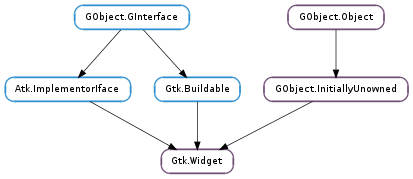

| Name | Type | Flags | Description |
|---|---|---|---|
| app-paintable | bool | r/w | Whether the application will paint directly on the widget |
| can-default | bool | r/w | Whether the widget can be the default widget |
| can-focus | bool | r/w | Whether the widget can accept the input focus |
| composite-child | bool | r | Whether the widget is part of a composite widget |
| double-buffered | bool | r/w | Whether the widget is double buffered |
| events | Gdk.EventMask | r/w | The event mask that decides what kind of GdkEvents this widget gets |
| expand | bool | r/w | Whether widget wants to expand in both directions |
| halign | Gtk.Align | r/w | How to position in extra horizontal space |
| has-default | bool | r/w | Whether the widget is the default widget |
| has-focus | bool | r/w | Whether the widget has the input focus |
| has-tooltip | bool | r/w | Whether this widget has a tooltip |
| height-request | int | r/w | Override for height request of the widget, or -1 if natural request should be used |
| hexpand | bool | r/w | Whether widget wants more horizontal space |
| hexpand-set | bool | r/w | Whether to use the hexpand property |
| is-focus | bool | r/w | Whether the widget is the focus widget within the toplevel |
| margin | int | r/w | Pixels of extra space on all four sides |
| margin-bottom | int | r/w | Pixels of extra space on the bottom side |
| margin-left | int | r/w | Pixels of extra space on the left side |
| margin-right | int | r/w | Pixels of extra space on the right side |
| margin-top | int | r/w | Pixels of extra space on the top side |
| name | str | r/w | The name of the widget |
| no-show-all | bool | r/w | Whether Gtk.Widget.show_all () should not affect this widget |
| opacity | float | r/w | The opacity of the widget, from 0 to 1 |
| parent | Gtk.Container | r/w | The parent widget of this widget. Must be a Container widget |
| receives-default | bool | r/w | If True, the widget will receive the default action when it is focused |
| scale-factor | int | r | The scaling factor of the window |
| sensitive | bool | r/w | Whether the widget responds to input |
| style | Gtk.Style | r/w | The style of the widget, which contains information about how it will look (colors etc) |
| tooltip-markup | str | r/w | The contents of the tooltip for this widget |
| tooltip-text | str | r/w | The contents of the tooltip for this widget |
| valign | Gtk.Align | r/w | How to position in extra vertical space |
| vexpand | bool | r/w | Whether widget wants more vertical space |
| vexpand-set | bool | r/w | Whether to use the vexpand property |
| visible | bool | r/w | Whether the widget is visible |
| width-request | int | r/w | Override for width request of the widget, or -1 if natural request should be used |
| window | Gdk.Window | r | The widget’s window if it is realized |
| Name | Parameters | Return | Description |
|---|---|---|---|
| accel-closures-changed | |||
| button-press-event | Gdk.Event | bool | The ::button-press-event signal will be emitted when a button (typically from a mouse) is pressed. To receive this signal, the Gdk.Window associated to the widget needs to enable the Gdk.EventMask.BUTTON_PRESS_MASK mask. This signal will be sent to the grab widget if there is one. |
| button-release-event | Gdk.Event | bool | The ::button-release-event signal will be emitted when a button (typically from a mouse) is released. To receive this signal, the Gdk.Window associated to the widget needs to enable the Gdk.EventMask.BUTTON_RELEASE_MASK mask. This signal will be sent to the grab widget if there is one. |
| can-activate-accel | int | bool | Determines whether an accelerator that activates the signal identified by signal_id can currently be activated. This signal is present to allow applications and derived widgets to override the default Gtk.Widget handling for determining whether an accelerator can be activated. |
| child-notify | GObject.ParamSpec | The ::child-notify signal is emitted for each child property that has changed on an object. The signal’s detail holds the property name. | |
| composited-changed | The ::composited-changed signal is emitted when the composited status of widget s screen changes. See Gdk.Screen.is_composited (). | ||
| configure-event | Gdk.Event | bool | The ::configure-event signal will be emitted when the size, position or stacking of the widget ‘s window has changed. To receive this signal, the Gdk.Window associated to the widget needs to enable the Gdk.EventMask.STRUCTURE_MASK mask. GDK will enable this mask automatically for all new windows. |
| damage-event | Gdk.Event | bool | Emitted when a redirected window belonging to widget gets drawn into. The region/area members of the event shows what area of the redirected drawable was drawn into. |
| delete-event | Gdk.Event | bool | The ::delete-event signal is emitted if a user requests that a toplevel window is closed. The default handler for this signal destroys the window. Connecting Gtk.Widget.hide_on_delete () to this signal will cause the window to be hidden instead, so that it can later be shown again without reconstructing it. |
| destroy | Signals that all holders of a reference to the widget should release the reference that they hold. May result in finalization of the widget if all references are released. | ||
| destroy-event | Gdk.Event | bool | The ::destroy-event signal is emitted when a Gdk.Window is destroyed. You rarely get this signal, because most widgets disconnect themselves from their window before they destroy it, so no widget owns the window at destroy time. To receive this signal, the Gdk.Window associated to the widget needs to enable the Gdk.EventMask.STRUCTURE_MASK mask. GDK will enable this mask automatically for all new windows. |
| direction-changed | Gtk.TextDirection | The ::direction-changed signal is emitted when the text direction of a widget changes. | |
| drag-begin | Gdk.DragContext | The ::drag-begin signal is emitted on the drag source when a drag is started. A typical reason to connect to this signal is to set up a custom drag icon with e.g. Gtk.Widget.drag_source_set_icon_pixbuf (). Note that some widgets set up a drag icon in the default handler of this signal, so you may have to use g_signal_connect_after() to override what the default handler did. | |
| drag-data-delete | Gdk.DragContext | The ::drag-data-delete signal is emitted on the drag source when a drag with the action Gdk.DragAction.MOVE is successfully completed. The signal handler is responsible for deleting the data that has been dropped. What “delete” means depends on the context of the drag operation. | |
| drag-data-get | Gdk.DragContext, Gtk.SelectionData, int, int | The ::drag-data-get signal is emitted on the drag source when the drop site requests the data which is dragged. It is the responsibility of the signal handler to fill data with the data in the format which is indicated by info. See Gtk.SelectionData.set () and Gtk.SelectionData.set_text (). | |
| drag-data-received | Gdk.DragContext, int, int, Gtk.SelectionData, int, int | The ::drag-data-received signal is emitted on the drop site when the dragged data has been received. If the data was received in order to determine whether the drop will be accepted, the handler is expected to call Gdk.drag_status () and not finish the drag. If the data was received in response to a Gtk.Widget ::drag-drop signal (and this is the last target to be received), the handler for this signal is expected to process the received data and then call Gtk.drag_finish (), setting the success parameter depending on whether the data was processed successfully. Applications must create some means to determine why the signal was emitted and therefore whether to call Gdk.drag_status () or Gtk.drag_finish (). The handler may inspect the selected action with Gdk.DragContext.get_selected_action () before calling Gtk.drag_finish (), e.g. to implement Gdk.DragAction.ASK as shown in the following example: .. code-block:: c void drag_data_received (GtkWidget *widget, GdkDragContext *context, gint x, gint y, GtkSelectionData *data, guint info, guint time) { if ((data->length >= 0) && (data->format == 8)) { GdkDragAction action; /* handle data here */ action = gdk_drag_context_get_selected_action (context); if (action == GDK_ACTION_ASK) { GtkWidget *dialog; gint response; dialog = gtk_message_dialog_new (NULL, GTK_DIALOG_MODAL | GTK_DIALOG_DESTROY_WITH_PARENT, GTK_MESSAGE_INFO, GTK_BUTTONS_YES_NO, “Move the data ?n”); response = gtk_dialog_run (GTK_DIALOG (dialog)); gtk_widget_destroy (dialog); if (response == GTK_RESPONSE_YES) action = GDK_ACTION_MOVE; else action = GDK_ACTION_COPY; } gtk_drag_finish (context, TRUE, action == GDK_ACTION_MOVE, time); } else gtk_drag_finish (context, FALSE, FALSE, time); } | |
| drag-drop | Gdk.DragContext, int, int, int | bool | The ::drag-drop signal is emitted on the drop site when the user drops the data onto the widget. The signal handler must determine whether the cursor position is in a drop zone or not. If it is not in a drop zone, it returns False and no further processing is necessary. Otherwise, the handler returns True. In this case, the handler must ensure that Gtk.drag_finish () is called to let the source know that the drop is done. The call to Gtk.drag_finish () can be done either directly or in a Gtk.Widget ::drag-data-received handler which gets triggered by calling Gtk.Widget.drag_get_data () to receive the data for one or more of the supported targets. |
| drag-end | Gdk.DragContext | The ::drag-end signal is emitted on the drag source when a drag is finished. A typical reason to connect to this signal is to undo things done in Gtk.Widget ::drag-begin. | |
| drag-failed | Gdk.DragContext, Gtk.DragResult | bool | The ::drag-failed signal is emitted on the drag source when a drag has failed. The signal handler may hook custom code to handle a failed DND operation based on the type of error, it returns True is the failure has been already handled (not showing the default “drag operation failed” animation), otherwise it returns False. |
| drag-leave | Gdk.DragContext, int | The ::drag-leave signal is emitted on the drop site when the cursor leaves the widget. A typical reason to connect to this signal is to undo things done in Gtk.Widget ::drag-motion, e.g. undo highlighting with Gtk.Widget.drag_unhighlight (). Likewise, the Gtk.Widget ::drag-leave signal is also emitted before the ::drag-drop signal, for instance to allow cleaning up of a preview item created in the Gtk.Widget ::drag-motion signal handler. | |
| drag-motion | Gdk.DragContext, int, int, int | bool | The ::drag-motion signal is emitted on the drop site when the user moves the cursor over the widget during a drag. The signal handler must determine whether the cursor position is in a drop zone or not. If it is not in a drop zone, it returns False and no further processing is necessary. Otherwise, the handler returns True. In this case, the handler is responsible for providing the necessary information for displaying feedback to the user, by calling Gdk.drag_status (). If the decision whether the drop will be accepted or rejected can’t be made based solely on the cursor position and the type of the data, the handler may inspect the dragged data by calling Gtk.Widget.drag_get_data () and defer the Gdk.drag_status () call to the Gtk.Widget ::drag-data-received handler. Note that you cannot not pass Gtk.DestDefaults.DROP, Gtk.DestDefaults.MOTION or Gtk.DestDefaults.ALL to Gtk.Widget.drag_dest_set () when using the drag-motion signal that way. Also note that there is no drag-enter signal. The drag receiver has to keep track of whether he has received any drag-motion signals since the last Gtk.Widget ::drag-leave and if not, treat the drag-motion signal as an “enter” signal. Upon an “enter”, the handler will typically highlight the drop site with Gtk.Widget.drag_highlight (). .. code-block:: c static void drag_motion (GtkWidget *widget, GdkDragContext *context, gint x, gint y, guint time) { GdkAtom target; PrivateData *private_data = GET_PRIVATE_DATA (widget); if (!private_data->drag_highlight) { private_data->drag_highlight = 1; gtk_drag_highlight (widget); } target = gtk_drag_dest_find_target (widget, context, NULL); if (target == GDK_NONE) gdk_drag_status (context, 0, time); else { private_data->pending_status = gdk_drag_context_get_suggested_action (context); gtk_drag_get_data (widget, context, target, time); } return TRUE; } static void drag_data_received (GtkWidget *widget, GdkDragContext *context, gint x, gint y, GtkSelectionData *selection_data, guint info, guint time) { PrivateData *private_data = GET_PRIVATE_DATA (widget); if (private_data->suggested_action) { private_data->suggested_action = 0; /* We are getting this data due to a request in drag_motion, * rather than due to a request in drag_drop, so we are just * supposed to call gdk_drag_status(), not actually paste in * the data. */ str = gtk_selection_data_get_text (selection_data); if (!data_is_acceptable (str)) gdk_drag_status (context, 0, time); else gdk_drag_status (context, private_data->suggested_action, time); } else { /* accept the drop */ } } |
| draw | cairo.Context | bool | This signal is emitted when a widget is supposed to render itself. The widget ‘s top left corner must be painted at the origin of the passed in context and be sized to the values returned by Gtk.Widget.get_allocated_width () and Gtk.Widget.get_allocated_height (). Signal handlers connected to this signal can modify the cairo context passed as cr in any way they like and don’t need to restore it. The signal emission takes care of calling cairo_save() before and cairo_restore() after invoking the handler. The signal handler will get a cr with a clip region already set to the widget’s dirty region, i.e. to the area that needs repainting. Complicated widgets that want to avoid redrawing themselves completely can get the full extents of the clip region with Gdk.cairo_get_clip_rectangle (), or they can get a finer-grained representation of the dirty region with cairo_copy_clip_rectangle_list(). |
| enter-notify-event | Gdk.Event | bool | The ::enter-notify-event will be emitted when the pointer enters the widget ‘s window. To receive this signal, the Gdk.Window associated to the widget needs to enable the Gdk.EventMask.ENTER_NOTIFY_MASK mask. This signal will be sent to the grab widget if there is one. |
| event | Gdk.Event | bool | The GTK+ main loop will emit three signals for each GDK event delivered to a widget: one generic ::event signal, another, more specific, signal that matches the type of event delivered (e.g. Gtk.Widget ::key-press-event ) and finally a generic Gtk.Widget ::event-after signal. |
| event-after | Gdk.Event | After the emission of the Gtk.Widget ::event signal and (optionally) the second more specific signal, ::event-after will be emitted regardless of the previous two signals handlers return values. | |
| focus | Gtk.DirectionType | bool | |
| focus-in-event | Gdk.Event | bool | The ::focus-in-event signal will be emitted when the keyboard focus enters the widget ‘s window. To receive this signal, the Gdk.Window associated to the widget needs to enable the Gdk.EventMask.FOCUS_CHANGE_MASK mask. |
| focus-out-event | Gdk.Event | bool | The ::focus-out-event signal will be emitted when the keyboard focus leaves the widget ‘s window. To receive this signal, the Gdk.Window associated to the widget needs to enable the Gdk.EventMask.FOCUS_CHANGE_MASK mask. |
| grab-broken-event | Gdk.Event | bool | Emitted when a pointer or keyboard grab on a window belonging to widget gets broken. On X11, this happens when the grab window becomes unviewable (i.e. it or one of its ancestors is unmapped), or if the same application grabs the pointer or keyboard again. |
| grab-focus | |||
| grab-notify | bool | The ::grab-notify signal is emitted when a widget becomes shadowed by a GTK+ grab (not a pointer or keyboard grab) on another widget, or when it becomes unshadowed due to a grab being removed. A widget is shadowed by a Gtk.Widget.grab_add () when the topmost grab widget in the grab stack of its window group is not its ancestor. | |
| hide | The ::hide signal is emitted when widget is hidden, for example with Gtk.Widget.hide (). | ||
| hierarchy-changed | Gtk.Widget | The ::hierarchy-changed signal is emitted when the anchored state of a widget changes. A widget is anchored when its toplevel ancestor is a Gtk.Window. This signal is emitted when a widget changes from un-anchored to anchored or vice-versa. | |
| key-press-event | Gdk.Event | bool | The ::key-press-event signal is emitted when a key is pressed. The signal emission will reoccur at the key-repeat rate when the key is kept pressed. To receive this signal, the Gdk.Window associated to the widget needs to enable the Gdk.EventMask.KEY_PRESS_MASK mask. This signal will be sent to the grab widget if there is one. |
| key-release-event | Gdk.Event | bool | The ::key-release-event signal is emitted when a key is released. To receive this signal, the Gdk.Window associated to the widget needs to enable the Gdk.EventMask.KEY_RELEASE_MASK mask. This signal will be sent to the grab widget if there is one. |
| Gtk.DirectionType | bool | Gets emitted if keyboard navigation fails. See Gtk.Widget.keynav_failed () for details. | |
| leave-notify-event | Gdk.Event | bool | The ::leave-notify-event will be emitted when the pointer leaves the widget ‘s window. To receive this signal, the Gdk.Window associated to the widget needs to enable the Gdk.EventMask.LEAVE_NOTIFY_MASK mask. This signal will be sent to the grab widget if there is one. |
| map | The ::map signal is emitted when widget is going to be mapped, that is when the widget is visible (which is controlled with Gtk.Widget.set_visible ()) and all its parents up to the toplevel widget are also visible. Once the map has occurred, Gtk.Widget ::map-event will be emitted. The ::map signal can be used to determine whether a widget will be drawn, for instance it can resume an animation that was stopped during the emission of Gtk.Widget ::unmap. | ||
| map-event | Gdk.Event | bool | The ::map-event signal will be emitted when the widget ‘s window is mapped. A window is mapped when it becomes visible on the screen. To receive this signal, the Gdk.Window associated to the widget needs to enable the Gdk.EventMask.STRUCTURE_MASK mask. GDK will enable this mask automatically for all new windows. |
| mnemonic-activate | bool | bool | |
| motion-notify-event | Gdk.Event | bool | The ::motion-notify-event signal is emitted when the pointer moves over the widget’s Gdk.Window. To receive this signal, the Gdk.Window associated to the widget needs to enable the Gdk.EventMask.POINTER_MOTION_MASK mask. This signal will be sent to the grab widget if there is one. |
| move-focus | Gtk.DirectionType | ||
| parent-set | Gtk.Widget | The ::parent-set signal is emitted when a new parent has been set on a widget. | |
| bool | This signal gets emitted whenever a widget should pop up a context menu. This usually happens through the standard key binding mechanism; by pressing a certain key while a widget is focused, the user can cause the widget to pop up a menu. For example, the Gtk.Entry widget creates a menu with clipboard commands. See for an example of how to use this signal. | ||
| property-notify-event | Gdk.Event | bool | The ::property-notify-event signal will be emitted when a property on the widget ‘s window has been changed or deleted. To receive this signal, the Gdk.Window associated to the widget needs to enable the Gdk.EventMask.PROPERTY_CHANGE_MASK mask. |
| proximity-in-event | Gdk.Event | bool | To receive this signal the Gdk.Window associated to the widget needs to enable the Gdk.EventMask.PROXIMITY_IN_MASK mask. This signal will be sent to the grab widget if there is one. |
| proximity-out-event | Gdk.Event | bool | To receive this signal the Gdk.Window associated to the widget needs to enable the Gdk.EventMask.PROXIMITY_OUT_MASK mask. This signal will be sent to the grab widget if there is one. |
| query-tooltip | int, int, bool, Gtk.Tooltip | bool | Emitted when Gtk.Widget :has-tooltip is True and the hover timeout has expired with the cursor hovering “above” widget ; or emitted when widget got focus in keyboard mode. Using the given coordinates, the signal handler should determine whether a tooltip should be shown for widget. If this is the case True should be returned, False otherwise. Note that if keyboard_mode is True, the values of x and y are undefined and should not be used. The signal handler is free to manipulate tooltip with the therefore destined function calls. |
| realize | The ::realize signal is emitted when widget is associated with a Gdk.Window, which means that gtk_wiget_realize() has been called or the widget has been mapped (that is, it is going to be drawn). | ||
| screen-changed | Gdk.Screen | The ::screen-changed signal gets emitted when the screen of a widget has changed. | |
| scroll-event | Gdk.Event | bool | The ::scroll-event signal is emitted when a button in the 4 to 7 range is pressed. Wheel mice are usually configured to generate button press events for buttons 4 and 5 when the wheel is turned. To receive this signal, the Gdk.Window associated to the widget needs to enable the Gdk.EventMask.SCROLL_MASK mask. This signal will be sent to the grab widget if there is one. |
| selection-clear-event | Gdk.Event | bool | The ::selection-clear-event signal will be emitted when the the widget ‘s window has lost ownership of a selection. |
| selection-get | Gtk.SelectionData, int, int | ||
| selection-notify-event | Gdk.Event | bool | |
| selection-received | Gtk.SelectionData, int | ||
| selection-request-event | Gdk.Event | bool | The ::selection-request-event signal will be emitted when another client requests ownership of the selection owned by the widget ‘s window. |
| show | The ::show signal is emitted when widget is shown, for example with Gtk.Widget.show (). | ||
| show-help | Gtk.WidgetHelpType | bool | |
| size-allocate | cairo.RectangleInt | ||
| state-changed | Gtk.StateType | The ::state-changed signal is emitted when the widget state changes. See Gtk.Widget.get_state (). | |
| state-flags-changed | Gtk.StateFlags | The ::state-flags-changed signal is emitted when the widget state changes, see Gtk.Widget.get_state_flags (). | |
| style-set | Gtk.Style | The ::style-set signal is emitted when a new style has been set on a widget. Note that style-modifying functions like Gtk.Widget.modify_base () also cause this signal to be emitted. Note that this signal is emitted for changes to the deprecated Gtk.Style. To track changes to the Gtk.StyleContext associated with a widget, use the Gtk.Widget ::style-updated signal. | |
| style-updated | The ::style-updated signal is emitted when the Gtk.StyleContext of a widget is changed. Note that style-modifying functions like Gtk.Widget.override_color () also cause this signal to be emitted. | ||
| touch-event | Gdk.Event | bool | |
| unmap | The ::unmap signal is emitted when widget is going to be unmapped, which means that either it or any of its parents up to the toplevel widget have been set as hidden. As ::unmap indicates that a widget will not be shown any longer, it can be used to, for example, stop an animation on the widget. | ||
| unmap-event | Gdk.Event | bool | The ::unmap-event signal will be emitted when the widget ‘s window is unmapped. A window is unmapped when it becomes invisible on the screen. To receive this signal, the Gdk.Window associated to the widget needs to enable the Gdk.EventMask.STRUCTURE_MASK mask. GDK will enable this mask automatically for all new windows. |
| unrealize | The ::unrealize signal is emitted when the Gdk.Window associated with widget is destroyed, which means that Gtk.Widget.unrealize () has been called or the widget has been unmapped (that is, it is going to be hidden). | ||
| visibility-notify-event | Gdk.Event | bool | The ::visibility-notify-event will be emitted when the widget ‘s window is obscured or unobscured. To receive this signal the Gdk.Window associated to the widget needs to enable the Gdk.EventMask.VISIBILITY_NOTIFY_MASK mask. |
| window-state-event | Gdk.Event | bool | The ::window-state-event will be emitted when the state of the toplevel window associated to the widget changes. To receive this signal the Gdk.Window associated to the widget needs to enable the Gdk.EventMask.STRUCTURE_MASK mask. GDK will enable this mask automatically for all new windows. |
| Name | Type | Access |
|---|---|---|
| parent_instance | GObject.InitiallyUnowned | r |
Bases: GObject.InitiallyUnowned, Atk.ImplementorIface, Gtk.Buildable
Gtk.Widget is the base class all widgets in GTK+ derive from. It manages the widget lifecycle, states and style.
Height-for-width Geometry Management
GTK+ uses a height-for-width (and width-for-height) geometry management system. Height-for-width means that a widget can change how much vertical space it needs, depending on the amount of horizontal space that it is given (and similar for width-for-height). The most common example is a label that reflows to fill up the available width, wraps to fewer lines, and therefore needs less height.
Height-for-width geometry management is implemented in GTK+ by way of five virtual methods:
There are some important things to keep in mind when implementing height-for-width and when using it in container implementations.
The geometry management system will query a widget hierarchy in only one orientation at a time. When widgets are initially queried for their minimum sizes it is generally done in two initial passes in the Gtk.SizeRequestMode chosen by the toplevel.
For example, when queried in the normal Gtk.SizeRequestMode.HEIGHT_FOR_WIDTH mode: First, the default minimum and natural width for each widget in the interface will be computed using Gtk.Widget.get_preferred_width (). Because the preferred widths for each container depend on the preferred widths of their children, this information propagates up the hierarchy, and finally a minimum and natural width is determined for the entire toplevel. Next, the toplevel will use the minimum width to query for the minimum height contextual to that width using Gtk.Widget.get_preferred_height_for_width (), which will also be a highly recursive operation. The minimum height for the minimum width is normally used to set the minimum size constraint on the toplevel (unless Gtk.Window.set_geometry_hints () is explicitly used instead).
After the toplevel window has initially requested its size in both dimensions it can go on to allocate itself a reasonable size (or a size previously specified with Gtk.Window.set_default_size ()). During the recursive allocation process it’s important to note that request cycles will be recursively executed while container widgets allocate their children. Each container widget, once allocated a size, will go on to first share the space in one orientation among its children and then request each child’s height for its target allocated width or its width for allocated height, depending. In this way a Gtk.Widget will typically be requested its size a number of times before actually being allocated a size. The size a widget is finally allocated can of course differ from the size it has requested. For this reason, Gtk.Widget caches a small number of results to avoid re-querying for the same sizes in one allocation cycle.
See Gtk.Container ‘s geometry management section to learn more about how height-for-width allocations are performed by container widgets.
If a widget does move content around to intelligently use up the allocated size then it must support the request in both Gtk.SizeRequestModes even if the widget in question only trades sizes in a single orientation.
For instance, a Gtk.Label that does height-for-width word wrapping will not expect to have Gtk.WidgetClass.get_preferred_height() called because that call is specific to a width-for-height request. In this case the label must return the height required for its own minimum possible width. By following this rule any widget that handles height-for-width or width-for-height requests will always be allocated at least enough space to fit its own content.
Here are some examples of how a Gtk.SizeRequestMode.HEIGHT_FOR_WIDTH widget generally deals with width-for-height requests, for Gtk.WidgetClass.get_preferred_height() it will do:
static void
foo_widget_get_preferred_height (GtkWidget *widget, gint *min_height, gint *nat_height)
{
if (i_am_in_height_for_width_mode)
{
gint min_width;
GTK_WIDGET_GET_CLASS (widget)->get_preferred_width (widget, &min_width, NULL);
GTK_WIDGET_GET_CLASS (widget)->get_preferred_height_for_width (widget, min_width,
min_height, nat_height);
}
else
{
... some widgets do both. For instance, if a GtkLabel is rotated to 90 degrees
it will return the minimum and natural height for the rotated label here.
}
}
And in Gtk.WidgetClass.get_preferred_width_for_height() it will simply return the minimum and natural width:
static void
foo_widget_get_preferred_width_for_height (GtkWidget *widget, gint for_height,
gint *min_width, gint *nat_width)
{
if (i_am_in_height_for_width_mode)
{
GTK_WIDGET_GET_CLASS (widget)->get_preferred_width (widget, min_width, nat_width);
}
else
{
... again if a widget is sometimes operating in width-for-height mode
(like a rotated GtkLabel) it can go ahead and do its real width for
height calculation here.
}
}
Often a widget needs to get its own request during size request or allocation. For example, when computing height it may need to also compute width. Or when deciding how to use an allocation, the widget may need to know its natural size. In these cases, the widget should be careful to call its virtual methods directly, like this:
Widget calling its own size request method.
GTK_WIDGET_GET_CLASS(widget)->get_preferred_width (widget),
&min, &natural);
It will not work to use the wrapper functions, such as Gtk.Widget.get_preferred_width () inside your own size request implementation. These return a request adjusted by Gtk.SizeGroup and by the Gtk.WidgetClass.adjust_size_request() virtual method. If a widget used the wrappers inside its virtual method implementations, then the adjustments (such as widget margins) would be applied twice. GTK+ therefore does not allow this and will warn if you try to do it.
Of course if you are getting the size request for another widget, such as a child of a container, you must use the wrapper APIs. Otherwise, you would not properly consider widget margins, Gtk.SizeGroup, and so forth.
Since 3.10 Gtk+ also supports baseline vertical alignment of widgets. This means that widgets are positioned such that the typographical baseline of widgets in the same row are aligned. This happens if a widget supports baselines, has a vertical alignment of Gtk.Align.BASELINE, and is inside a container that supports baselines and has a natural “row” that it aligns to the baseline, or a baseline assigned to it by the grandparent.
Baseline alignment support for a widget is done by the Gtk.WidgetClass.get_preferred_height_and_baseline_for_width() virtual function. It allows you to report a baseline in combination with the minimum and natural height. If there is no baseline you can return -1 to indicate this. The default implementation of this virtual function calls into the Gtk.WidgetClass.get_preferred_height() and Gtk.WidgetClass.get_preferred_height_for_width(), so if baselines are not supported it doesn’t need to be implemented.
If a widget ends up baseline aligned it will be allocated all the space in the parent as if it was Gtk.Align.FILL, but the selected baseline can be found via Gtk.Widget.get_allocated_baseline (). If this has a value other than -1 you need to align the widget such that the baseline appears at the position.
Style Properties Gtk.Widget introduces style properties - these are basically object properties that are stored not on the object, but in the style object associated to the widget. Style properties are set in resource files. This mechanism is used for configuring such things as the location of the scrollbar arrows through the theme, giving theme authors more control over the look of applications without the need to write a theme engine in C.
Use Gtk.WidgetClass.install_style_property () to install style properties for a widget class, Gtk.WidgetClass.find_style_property () or Gtk.WidgetClass.list_style_properties () to get information about existing style properties and Gtk.Widget.style_get_property (), Gtk.Widget.style_get () or Gtk.Widget.style_get_valist () to obtain the value of a style property.
The Gtk.Widget implementation of the Gtk.Buildable interface supports a custom <accelerator> element, which has attributes named key, modifiers and signal and allows to specify accelerators.
A UI definition fragment specifying an accelerator
<object class="GtkButton">
<accelerator key="q" modifiers="GDK_CONTROL_MASK" signal="clicked" />
</object>
In addition to accelerators, Gtk.Widget also support a custom <accessible> element, which supports actions and relations. Properties on the accessible implementation of an object can be set by accessing the internal child “accessible” of a Gtk.Widget.
A UI definition fragment specifying an accessible
<object class="GtkButton" id="label1" />
<property name="label">I am a Label for a Button</property>
</object>
<object class="GtkButton" id="button1">
<accessibility>
<action action_name="click" translatable="yes">Click the button.</action>
<relation target="label1" type="labelled-by" />
</accessibility>
<child internal-child="accessible">
<object class="AtkObject" id="a11y-button1">
<property name="accessible-name">Clickable Button</property>
</object>
</child>
</object>
Finally, Gtk.Widget allows style information such as style classes to be associated with widgets, using the custom <style> element:
A UI definition fragment specifying an style class
<object class="GtkButton" id="button1">
<style>
<class name="my-special-button-class" />
<class name="dark-button" />
</style>
</object>
Building composite widgets from template XML
Gtk.Widget exposes some facilities to automate the proceedure of creating composite widgets using Gtk.Builder interface description language.
To create composite widgets with Gtk.Builder XML, one must associate the interface description with the widget class at class initialization time using Gtk.WidgetClass.set_template ().
The interface description semantics expected in composite template descriptions is slightly different from regulare Gtk.Builder XML.
Unlike regular interface descriptions, Gtk.WidgetClass.set_template () will expect a <template> tag as a direct child of the toplevel <interface> tag. The <template> tag must specify the “class” attribute which must be the type name of the widget. Optionally, the “parent” attribute may be specified to specify the direct parent type of the widget type, this is ignored by the Gtk.Builder but required for Glade to introspect what kind of properties and internal children exist for a given type when the actual type does not exist.
The XML which is contained inside the <template> tag behaves as if it were added to the <object> tag defining widget itself. You may set properties on widget by inserting <property> tags into the <template> tag, and also add <child> tags to add children and extend widget in the normal way you would with <object> tags.
Additionally, <object> tags can also be added before and after the initial <template> tag in the normal way, allowing one to define auxilary objects which might be referenced by other widgets declared as children of the <template> tag.
A Gtk.Builder Template Definition
<interface>
<template class="FooWidget" parent="GtkBox">
<property name="orientation">GTK_ORIENTATION_HORIZONTAL</property>
<property name="spacing">4</property>
<child>
<object class="GtkButton" id="hello_button">
<property name="label">Hello World</property>
</object>
</child>
<child>
<object class="GtkButton" id="goodbye_button">
<property name="label">Goodbye World</property>
</object>
</child>
</template>
</interface>
| Returns: | the current default direction. |
|---|---|
| Return type: | Gtk.TextDirection |
Obtains the current default reading direction. See Gtk.Widget.set_default_direction ().
| Returns: | the default style. This Gtk.Style object is owned by GTK+ and should not be modified or freed. |
|---|---|
| Return type: | Gtk.Style |
Returns the default style used by all widgets initially.
Cancels the effect of a previous call to Gtk.Widget.push_composite_child ().
Makes all newly-created widgets as composite children until the corresponding Gtk.Widget.pop_composite_child () call.
A composite child is a child that’s an implementation detail of the container it’s inside and should not be visible to people using the container. Composite children aren’t treated differently by GTK (but see Gtk.Container.foreach () vs. Gtk.Container.forall ()), but e.g. GUI builders might want to treat them in a different way.
Here is a simple example:
gtk_widget_push_composite_child ();
scrolled_window->hscrollbar = gtk_scrollbar_new (GTK_ORIENTATION_HORIZONTAL, hadjustment);
gtk_widget_set_composite_name (scrolled_window->hscrollbar, "hscrollbar");
gtk_widget_pop_composite_child ();
gtk_widget_set_parent (scrolled_window->hscrollbar,
GTK_WIDGET (scrolled_window));
g_object_ref (scrolled_window->hscrollbar);
| Parameters: | dir (Gtk.TextDirection) – the new default direction. This cannot be Gtk.TextDirection.NONE. |
|---|
Sets the default reading direction for widgets where the direction has not been explicitly set by Gtk.Widget.set_direction ().
| Returns: | True if the widget was activatable |
|---|---|
| Return type: | bool |
For widgets that can be “activated” (buttons, menu items, etc.) this function activates them. Activation is what happens when you press Enter on a widget during key navigation. If widget isn’t activatable, the function returns False.
| Parameters: |
|
|---|
Installs an accelerator for this widget in accel_group that causes accel_signal to be emitted if the accelerator is activated. The accel_group needs to be added to the widget’s toplevel via Gtk.Window.add_accel_group (), and the signal must be of type GObject.SignalFlags.ACTION. Accelerators added through this function are not user changeable during runtime. If you want to support accelerators that can be changed by the user, use Gtk.AccelMap.add_entry () and Gtk.Widget.set_accel_path () or Gtk.MenuItem.set_accel_path () instead.
| Parameters: |
|
|---|
Adds the device events in the bitfield events to the event mask for widget. See Gtk.Widget.set_device_events () for details.
| Parameters: | events (int) – an event mask, see Gdk.EventMask |
|---|
Adds the events in the bitfield events to the event mask for widget. See Gtk.Widget.set_events () for details.
| Parameters: | label (Gtk.Widget) – a Gtk.Widget that acts as a mnemonic label for widget |
|---|
Adds a widget to the list of mnemonic labels for this widget. (See Gtk.Widget.list_mnemonic_labels ()). Note the list of mnemonic labels for the widget is cleared when the widget is destroyed, so the caller must make sure to update its internal state at this point as well, by using a connection to the Gtk.Widget ::destroy signal or a weak notifier.
| Parameters: |
|
|---|---|
| Returns: | an id for the connection of this callback. Remove the callback by passing it to Gtk.Widget.remove_tick_callback () |
| Return type: |
Queues an animation frame update and adds a callback to be called before each frame. Until the tick callback is removed, it will be called frequently (usually at the frame rate of the output device or as quickly as the application can be repainted, whichever is slower). For this reason, is most suitable for handling graphics that change every frame or every few frames. The tick callback does not automatically imply a relayout or repaint. If you want a repaint or relayout, and aren’t changing widget properties that would trigger that (for example, changing the text of a Gtk.Label ), then you will have to call Gtk.Widget.queue_resize () or Gtk.Widget.queue_draw_area () yourself.
Gdk.FrameClock.get_frame_time () should generally be used for timing continuous animations and Gdk.FrameTimings.get_predicted_presentation_time () if you are trying to display isolated frames at particular times.
This is a more convenient alternative to connecting directly to the Gdk.FrameClock ::update signal of Gdk.FrameClock, since you don’t have to worry about when a Gdk.FrameClock is assigned to a widget.
| Parameters: | signal_id (int) – the ID of a signal installed on widget |
|---|---|
| Returns: | True if the accelerator can be activated. |
| Return type: | bool |
Determines whether an accelerator that activates the signal identified by signal_id can currently be activated. This is done by emitting the Gtk.Widget ::can-activate-accel signal on widget ; if the signal isn’t overridden by a handler or in a derived widget, then the default check is that the widget must be sensitive, and the widget and all its ancestors mapped.
| Parameters: | direction (Gtk.DirectionType) – direction of focus movement |
|---|---|
| Returns: | True if focus ended up inside widget |
| Return type: | bool |
This function is used by custom widget implementations; if you’re writing an app, you’d use Gtk.Widget.grab_focus () to move the focus to a particular widget, and Gtk.Container.set_focus_chain () to change the focus tab order. So you may want to investigate those functions instead.
Gtk.Widget.child_focus () is called by containers as the user moves around the window using keyboard shortcuts. direction indicates what kind of motion is taking place (up, down, left, right, tab forward, tab backward). Gtk.Widget.child_focus () emits the Gtk.Widget ::focus signal; widgets override the default handler for this signal in order to implement appropriate focus behavior.
The default ::focus handler for a widget should return True if moving in direction left the focus on a focusable location inside that widget, and False if moving in direction moved the focus outside the widget. If returning True, widgets normally call Gtk.Widget.grab_focus () to place the focus accordingly; if returning False, they don’t modify the current focus location.
| Parameters: | child_property (str) – the name of a child property installed on the class of widget ‘s parent |
|---|
Emits a Gtk.Widget ::child-notify signal for the child property child_property on widget.
This is the analogue of GObject.Object.notify () for child properties.
Also see Gtk.Container.child_notify ().
| Return type: | path_length: int, path: str, path_reversed: str |
|---|
Same as Gtk.Widget.path (), but always uses the name of a widget’s type, never uses a custom name set with Gtk.Widget.set_name ().
| Parameters: | orientation (Gtk.Orientation) – expand direction |
|---|---|
| Returns: | whether widget tree rooted here should be expanded |
| Return type: | bool |
Computes whether a container should give this widget extra space when possible. Containers should check this, rather than looking at Gtk.Widget.get_hexpand () or Gtk.Widget.get_vexpand ().
This function already checks whether the widget is visible, so visibility does not need to be checked separately. Non-visible widgets are not expanded.
The computed expand value uses either the expand setting explicitly set on the widget itself, or, if none has been explicitly set, the widget may expand if some of its children do.
| Returns: | the new Pango.Context |
|---|---|
| Return type: | Pango.Context |
Creates a new Pango.Context with the appropriate font map, font description, and base direction for drawing text for this widget. See also Gtk.Widget.get_pango_context ().
| Parameters: | text (str) – text to set on the layout (can be None ) |
|---|---|
| Returns: | the new Pango.Layout |
| Return type: | Pango.Layout |
Creates a new Pango.Layout with the appropriate font map, font description, and base direction for drawing text for this widget.
If you keep a Pango.Layout created in this way around, you need to re-create it when the widget Pango.Context is replaced. This can be tracked by using the Gtk.Widget ::screen-changed signal on the widget.
Signals that all holders of a reference to the widget should release the reference that they hold. May result in finalization of the widget if all references are released.
| Parameters: | widget_pointer (Gtk.Widget) – address of a variable that contains widget |
|---|---|
| Return type: | widget_pointer: Gtk.Widget |
This function sets *@widget_pointer to None if widget_pointer != None. It’s intended to be used as a callback connected to the “destroy” signal of a widget. You connect Gtk.Widget.destroyed () as a signal handler, and pass the address of your widget variable as user data. Then when the widget is destroyed, the variable will be set to None. Useful for example to avoid multiple copies of the same dialog.
| Parameters: | device (Gdk.Device) – a Gdk.Device |
|---|---|
| Returns: | True if there is an ongoing grab on device by another Gtk.Widget than widget. |
| Return type: | bool |
Returns True if device has been shadowed by a GTK+ device grab on another widget, so it would stop sending events to widget. This may be used in the Gtk.Widget ::grab-notify signal to check for specific devices. See Gtk.device_grab_add ().
| Parameters: |
|
|---|---|
| Returns: | the context for this drag. |
| Return type: |
This is equivalent to Gtk.Widget.drag_begin_with_coordinates (), passing -1, -1 as coordinates.
| Parameters: |
|
|---|---|
| Returns: | the context for this drag. |
| Return type: |
Initiates a drag on the source side. The function only needs to be used when the application is starting drags itself, and is not needed when Gtk.Widget.drag_source_set () is used.
The event is used to retrieve the timestamp that will be used internally to grab the pointer. If event is None, then Gdk.CURRENT_TIME will be used. However, you should try to pass a real event in all cases, since that can be used to get information about the drag.
Generally there are three cases when you want to start a drag by hand by calling this function:
1. During a Gtk.Widget ::button-press-event handler, if you want to start a drag immediately when the user presses the mouse button. Pass the event that you have in your Gtk.Widget ::button-press-event handler.
2. During a Gtk.Widget ::motion-notify-event handler, if you want to start a drag when the mouse moves past a certain threshold distance after a button-press. Pass the event that you have in your Gtk.Widget ::motion-notify-event handler.
3. During a timeout handler, if you want to start a drag after the mouse button is held down for some time. Try to save the last event that you got from the mouse, using Gdk.Event.copy (), and pass it to this function (remember to free the event with Gdk.Event.free () when you are done). If you can really not pass a real event, pass None instead.
| Parameters: | |
|---|---|
| Returns: | True if the drag threshold has been passed. |
| Return type: |
Checks to see if a mouse drag starting at (start_x, start_y ) and ending at (current_x, current_y ) has passed the GTK+ drag threshold, and thus should trigger the beginning of a drag-and-drop operation.
Add the image targets supported by #GtkSelection to the target list of the drag destination. The targets are added with info = 0. If you need another value, use Gtk.TargetList.add_image_targets () and Gtk.Widget.drag_dest_set_target_list ().
Add the text targets supported by #GtkSelection to the target list of the drag destination. The targets are added with info = 0. If you need another value, use Gtk.TargetList.add_text_targets () and Gtk.Widget.drag_dest_set_target_list ().
Add the URI targets supported by #GtkSelection to the target list of the drag destination. The targets are added with info = 0. If you need another value, use Gtk.TargetList.add_uri_targets () and Gtk.Widget.drag_dest_set_target_list ().
| Parameters: |
|
|---|---|
| Returns: | first target that the source offers and the dest can accept, or %GDK_NONE |
| Return type: |
Looks for a match between the supported targets of context and the dest_target_list, returning the first matching target, otherwise returning %GDK_NONE. dest_target_list should usually be the return value from Gtk.Widget.drag_dest_get_target_list (), but some widgets may have different valid targets for different parts of the widget; in that case, they will have to implement a drag_motion handler that passes the correct target list to this function.
| Returns: | the Gtk.TargetList, or None if none |
|---|---|
| Return type: | Gtk.TargetList |
Returns the list of targets this widget can accept from drag-and-drop.
| Returns: | True if the widget always emits Gtk.Widget ::drag-motion events |
|---|---|
| Return type: | bool |
Returns whether the widget has been configured to always emit Gtk.Widget ::drag-motion signals.
| Parameters: |
|
|---|
Sets a widget as a potential drop destination, and adds default behaviors.
The default behaviors listed in flags have an effect similar to installing default handlers for the widget’s drag-and-drop signals (Gtk.Widget ::drag-motion, Gtk.Widget ::drag-drop, ...). They all exist for convenience. When passing Gtk.DestDefaults.ALL for instance it is sufficient to connect to the widget’s Gtk.Widget ::drag-data-received signal to get primitive, but consistent drag-and-drop support.
Things become more complicated when you try to preview the dragged data, as described in the documentation for Gtk.Widget ::drag-motion. The default behaviors described by flags make some assumptions, that can conflict with your own signal handlers. For instance Gtk.DestDefaults.DROP causes invokations of Gdk.drag_status () in the context of Gtk.Widget ::drag-motion, and invokations of Gtk.drag_finish () in Gtk.Widget ::drag-data-received. Especially the later is dramatic, when your own Gtk.Widget ::drag-motion handler calls Gtk.Widget.drag_get_data () to inspect the dragged data.
There’s no way to set a default action here, you can use the Gtk.Widget ::drag-motion callback for that. Here’s an example which selects the action to use depending on whether the control key is pressed or not:
static void
drag_motion (GtkWidget *widget,
GdkDragContext *context,
gint x,
gint y,
guint time)
{
GdkModifierType mask;
gdk_window_get_pointer (gtk_widget_get_window (widget),
NULL, NULL, &mask);
if (mask & GDK_CONTROL_MASK)
gdk_drag_status (context, GDK_ACTION_COPY, time);
else
gdk_drag_status (context, GDK_ACTION_MOVE, time);
}
| Parameters: |
|
|---|
Sets this widget as a proxy for drops to another window.
| Parameters: | target_list (Gtk.TargetList or None) – list of droppable targets, or None for none |
|---|
Sets the target types that this widget can accept from drag-and-drop. The widget must first be made into a drag destination with Gtk.Widget.drag_dest_set ().
| Parameters: | track_motion (bool) – whether to accept all targets |
|---|
Tells the widget to emit Gtk.Widget ::drag-motion and Gtk.Widget ::drag-leave events regardless of the targets and the Gtk.DestDefaults.MOTION flag.
This may be used when a widget wants to do generic actions regardless of the targets that the source offers.
Clears information about a drop destination set with Gtk.Widget.drag_dest_set (). The widget will no longer receive notification of drags.
| Parameters: |
|
|---|
Gets the data associated with a drag. When the data is received or the retrieval fails, GTK+ will emit a Gtk.Widget ::drag-data-received signal. Failure of the retrieval is indicated by the length field of the selection_data signal parameter being negative. However, when Gtk.Widget.drag_get_data () is called implicitely because the Gtk.DestDefaults.DROP was set, then the widget will not receive notification of failed drops.
Draws a highlight around a widget. This will attach handlers to Gtk.Widget ::draw, so the highlight will continue to be displayed until Gtk.Widget.drag_unhighlight () is called.
Add the writable image targets supported by #GtkSelection to the target list of the drag source. The targets are added with info = 0. If you need another value, use Gtk.TargetList.add_image_targets () and Gtk.Widget.drag_source_set_target_list ().
Add the text targets supported by #GtkSelection to the target list of the drag source. The targets are added with info = 0. If you need another value, use Gtk.TargetList.add_text_targets () and Gtk.Widget.drag_source_set_target_list ().
Add the URI targets supported by #GtkSelection to the target list of the drag source. The targets are added with info = 0. If you need another value, use Gtk.TargetList.add_uri_targets () and Gtk.Widget.drag_source_set_target_list ().
| Returns: | the Gtk.TargetList, or None if none |
|---|---|
| Return type: | Gtk.TargetList |
Gets the list of targets this widget can provide for drag-and-drop.
| Parameters: |
|
|---|
Sets up a widget so that GTK+ will start a drag operation when the user clicks and drags on the widget. The widget must have a window.
| Parameters: | icon (Gio.Icon) – A Gio.Icon |
|---|
Sets the icon that will be used for drags from a particular source to icon. See the docs for Gtk.IconTheme for more details.
| Parameters: | icon_name (str) – name of icon to use |
|---|
Sets the icon that will be used for drags from a particular source to a themed icon. See the docs for Gtk.IconTheme for more details.
| Parameters: | pixbuf (GdkPixbuf.Pixbuf) – the GdkPixbuf.Pixbuf for the drag icon |
|---|
Sets the icon that will be used for drags from a particular widget from a GdkPixbuf.Pixbuf. GTK+ retains a reference for pixbuf and will release it when it is no longer needed.
| Parameters: | stock_id (str) – the ID of the stock icon to use |
|---|
Sets the icon that will be used for drags from a particular source to a stock icon.
| Parameters: | target_list (Gtk.TargetList or None) – list of draggable targets, or None for none |
|---|
Changes the target types that this widget offers for drag-and-drop. The widget must first be made into a drag source with Gtk.Widget.drag_source_set ().
Undoes the effects of Gtk.Widget.drag_source_set ().
Removes a highlight set by Gtk.Widget.drag_highlight () from a widget.
| Parameters: | cr (cairo.Context) – the cairo context to draw to |
|---|---|
| Returns: | True to stop other handlers from being invoked for the event. % False to propagate the event further. |
This signal is emitted when a widget is supposed to render itself. The widget ‘s top left corner must be painted at the origin of the passed in context and be sized to the values returned by Gtk.Widget.get_allocated_width () and Gtk.Widget.get_allocated_height ().
Signal handlers connected to this signal can modify the cairo context passed as cr in any way they like and don’t need to restore it. The signal emission takes care of calling cairo_save() before and cairo_restore() after invoking the handler.
The signal handler will get a cr with a clip region already set to the widget’s dirty region, i.e. to the area that needs repainting. Complicated widgets that want to avoid redrawing themselves completely can get the full extents of the clip region with Gdk.cairo_get_clip_rectangle (), or they can get a finer-grained representation of the dirty region with cairo_copy_clip_rectangle_list().
Ensures that widget has a style (widget- >style).
Not a very useful function; most of the time, if you want the style, the widget is realized, and realized widgets are guaranteed to have a style already.
Notifies the user about an input-related error on this widget. If the Gtk.Settings :gtk-error-bell setting is True, it calls Gdk.Window.beep (), otherwise it does nothing.
Note that the effect of Gdk.Window.beep () can be configured in many ways, depending on the windowing backend and the desktop environment or window manager that is used.
| Parameters: | event (Gdk.Event) – the Gdk.Event which triggered this signal |
|---|---|
| Returns: | True to stop other handlers from being invoked for the event and to cancel the emission of the second specific ::event signal. False to propagate the event further and to allow the emission of the second signal. The ::event-after signal is emitted regardless of the return value. |
| Return type: | bool |
The GTK+ main loop will emit three signals for each GDK event delivered to a widget: one generic ::event signal, another, more specific, signal that matches the type of event delivered (e.g. Gtk.Widget ::key-press-event ) and finally a generic Gtk.Widget ::event-after signal.
Stops emission of Gtk.Widget ::child-notify signals on widget. The signals are queued until Gtk.Widget.thaw_child_notify () is called on widget.
This is the analogue of GObject.Object.freeze_notify () for child properties.
| Returns: | the Atk.Object associated with widget |
|---|---|
| Return type: | Atk.Object |
Returns the accessible object that describes the widget to an assistive technology.
If accessibility support is not available, this Atk.Object instance may be a no-op. Likewise, if no class-specific Atk.Object implementation is available for the widget instance in question, it will inherit an Atk.Object implementation from the first ancestor class for which such an implementation is defined.
The documentation of the ATK library contains more information about accessible objects and their uses.
| Returns: | the baseline of the widget, or -1 if none |
|---|---|
| Return type: | int |
Returns the baseline that has currently been allocated to widget. This function is intended to be used when implementing handlers for the Gtk.Widget ::draw function, and when allocating child widgets in Gtk.Widget ::size-allocate.
| Returns: | the height of the widget |
|---|---|
| Return type: | int |
Returns the height that has currently been allocated to widget. This function is intended to be used when implementing handlers for the Gtk.Widget ::draw function.
| Returns: | the width of the widget |
|---|---|
| Return type: | int |
Returns the width that has currently been allocated to widget. This function is intended to be used when implementing handlers for the Gtk.Widget ::draw function.
| Return type: | allocation: cairo.RectangleInt |
|---|
Retrieves the widget’s allocation.
Note, when implementing a Gtk.Container: a widget’s allocation will be its “adjusted” allocation, that is, the widget’s parent container typically calls Gtk.Widget.size_allocate () with an allocation, and that allocation is then adjusted (to handle margin and alignment for example) before assignment to the widget. Gtk.Widget.get_allocation () returns the adjusted allocation that was actually assigned to the widget. The adjusted allocation is guaranteed to be completely contained within the Gtk.Widget.size_allocate () allocation, however. So a Gtk.Container is guaranteed that its children stay inside the assigned bounds, but not that they have exactly the bounds the container assigned. There is no way to get the original allocation assigned by Gtk.Widget.size_allocate (), since it isn’t stored; if a container implementation needs that information it will have to track it itself.
| Parameters: | widget_type (GObject.GType) – ancestor type |
|---|---|
| Returns: | the ancestor widget, or None if not found |
| Return type: | Gtk.Widget |
Gets the first ancestor of widget with type widget_type. For example, gtk_widget_get_ancestor (widget, GTK_TYPE_BOX) gets the first Gtk.Box that’s an ancestor of widget. No reference will be added to the returned widget; it should not be unreferenced. See note about checking for a toplevel Gtk.Window in the docs for Gtk.Widget.get_toplevel ().
Note that unlike Gtk.Widget.is_ancestor (), Gtk.Widget.get_ancestor () considers widget to be an ancestor of itself.
| Returns: | True if the widget is app paintable |
|---|---|
| Return type: | bool |
Determines whether the application intends to draw on the widget in an Gtk.Widget ::draw handler.
See Gtk.Widget.set_app_paintable ()
| Returns: | True if widget can be a default widget, False otherwise |
|---|---|
| Return type: | bool |
Determines whether widget can be a default widget. See Gtk.Widget.set_can_default ().
| Returns: | True if widget can own the input focus, False otherwise |
|---|---|
| Return type: | bool |
Determines whether widget can own the input focus. See Gtk.Widget.set_can_focus ().
| Return type: | requisition: Gtk.Requisition |
|---|
This function is only for use in widget implementations. Obtains widget- >requisition, unless someone has forced a particular geometry on the widget (e.g. with Gtk.Widget.set_size_request ()), in which case it returns that geometry instead of the widget’s requisition.
This function differs from Gtk.Widget.size_request () in that it retrieves the last size request value from widget- >requisition, while Gtk.Widget.size_request () actually calls the “size_request” method on widget to compute the size request and fill in widget- >requisition, and only then returns widget- >requisition.
Because this function does not call the “size_request” method, it can only be used when you know that widget- >requisition is up-to-date, that is, Gtk.Widget.size_request () has been called since the last time a resize was queued. In general, only container implementations have this information; applications should use Gtk.Widget.size_request ().
| Returns: | True if the widget is mapped with the parent. |
|---|---|
| Return type: | bool |
Gets the value set with Gtk.Widget.set_child_visible (). If you feel a need to use this function, your code probably needs reorganization.
This function is only useful for container implementations and never should be called by an application.
| Parameters: | selection (Gdk.Atom) – a Gdk.Atom which identifies the clipboard to use. %GDK_SELECTION_CLIPBOARD gives the default clipboard. Another common value is %GDK_SELECTION_PRIMARY, which gives the primary X selection. |
|---|---|
| Returns: | the appropriate clipboard object. If no clipboard already exists, a new one will be created. Once a clipboard object has been created, it is persistent for all time. |
| Return type: | Gtk.Clipboard |
Returns the clipboard object for the given selection to be used with widget. widget must have a Gdk.Display associated with it, so must be attached to a toplevel window.
| Returns: | the composite name of widget, or None if widget is not a composite child. The string should be freed when it is no longer needed. |
|---|---|
| Return type: | str |
Obtains the composite name of a widget.
| Parameters: | device (Gdk.Device) – a Gdk.Device |
|---|---|
| Returns: | True is device is enabled for widget |
| Return type: | bool |
Returns whether device can interact with widget and its children. See Gtk.Widget.set_device_enabled ().
| Parameters: | device (Gdk.Device) – a Gdk.Device |
|---|---|
| Returns: | device event mask for widget |
| Return type: | Gdk.EventMask |
Returns the events mask for the widget corresponding to an specific device. These are the events that the widget will receive when device operates on it.
| Returns: | the reading direction for the widget. |
|---|---|
| Return type: | Gtk.TextDirection |
Gets the reading direction for a particular widget. See Gtk.Widget.set_direction ().
| Returns: | the Gdk.Display for the toplevel for this widget. |
|---|---|
| Return type: | Gdk.Display |
Get the Gdk.Display for the toplevel window associated with this widget. This function can only be called after the widget has been added to a widget hierarchy with a Gtk.Window at the top.
In general, you should only create display specific resources when a widget has been realized, and you should free those resources when the widget is unrealized.
| Returns: | True if the widget is double buffered |
|---|---|
| Return type: | bool |
Determines whether the widget is double buffered.
| Returns: | event mask for widget |
|---|---|
| Return type: | int |
Returns the event mask for the widget (a bitfield containing flags from the Gdk.EventMask enumeration). These are the events that the widget will receive.
| Returns: | a Gdk.FrameClock (or None if widget is unrealized) |
|---|---|
| Return type: | Gdk.FrameClock |
Obtains the frame clock for a widget. The frame clock is a global “ticker” that can be used to drive animations and repaints. The most common reason to get the frame clock is to call Gdk.FrameClock.get_frame_time (), in order to get a time to use for animating. For example you might record the start of the animation with an initial value from Gdk.FrameClock.get_frame_time (), and then update the animation by calling Gdk.FrameClock.get_frame_time () again during each repaint.
Gdk.FrameClock.request_phase () will result in a new frame on the clock, but won’t necessarily repaint any widgets. To repaint a widget, you have to use Gtk.Widget.queue_draw () which invalidates the widget (thus scheduling it to receive a draw on the next frame). Gtk.Widget.queue_draw () will also end up requesting a frame on the appropriate frame clock.
A widget’s frame clock will not change while the widget is mapped. Reparenting a widget (which implies a temporary unmap) can change the widget’s frame clock.
Unrealized widgets do not have a frame clock.
| Returns: | the horizontal alignment of widget |
|---|---|
| Return type: | Gtk.Align |
Gets the value of the Gtk.Widget :halign property.
For backwards compatibility reasons this method will never return Gtk.Align.BASELINE, but instead it will convert it to Gtk.Align.FILL. Baselines are not supported for horizontal alignment.
| Returns: | current value of has-tooltip on widget. |
|---|---|
| Return type: | bool |
Returns the current value of the has-tooltip property. See Gtk.Widget :has-tooltip for more information.
| Returns: | True if widget has a window, False otherwise |
|---|---|
| Return type: | bool |
Determines whether widget has a Gdk.Window of its own. See Gtk.Widget.set_has_window ().
| Returns: | whether hexpand flag is set |
|---|---|
| Return type: | bool |
Gets whether the widget would like any available extra horizontal space. When a user resizes a Gtk.Window, widgets with expand=TRUE generally receive the extra space. For example, a list or scrollable area or document in your window would often be set to expand.
Containers should use Gtk.Widget.compute_expand () rather than this function, to see whether a widget, or any of its children, has the expand flag set. If any child of a widget wants to expand, the parent may ask to expand also.
This function only looks at the widget’s own hexpand flag, rather than computing whether the entire widget tree rooted at this widget wants to expand.
| Returns: | whether hexpand has been explicitly set |
|---|---|
| Return type: | bool |
Gets whether Gtk.Widget.set_hexpand () has been used to explicitly set the expand flag on this widget.
If hexpand is set, then it overrides any computed expand value based on child widgets. If hexpand is not set, then the expand value depends on whether any children of the widget would like to expand.
There are few reasons to use this function, but it’s here for completeness and consistency.
| Returns: | True if the widget is mapped, False otherwise. |
|---|---|
| Return type: | bool |
Whether the widget is mapped.
| Returns: | The bottom margin of widget |
|---|---|
| Return type: | int |
Gets the value of the Gtk.Widget :margin-bottom property.
| Returns: | The left margin of widget |
|---|---|
| Return type: | int |
Gets the value of the Gtk.Widget :margin-left property.
| Returns: | The right margin of widget |
|---|---|
| Return type: | int |
Gets the value of the Gtk.Widget :margin-right property.
| Returns: | The top margin of widget |
|---|---|
| Return type: | int |
Gets the value of the Gtk.Widget :margin-top property.
| Parameters: | intent (Gdk.ModifierIntent) – the use case for the modifier mask |
|---|---|
| Returns: | the modifier mask used for intent. |
| Return type: | Gdk.ModifierType |
Returns the modifier mask the widget ‘s windowing system backend uses for a particular purpose.
See Gdk.Keymap.get_modifier_mask ().
| Returns: | the modifier style for the widget. This rc style is owned by the widget. If you want to keep a pointer to value this around, you must add a refcount using GObject.Object.ref (). |
|---|---|
| Return type: | Gtk.RcStyle |
Returns the current modifier style for the widget. (As set by Gtk.Widget.modify_style ().) If no style has previously set, a new Gtk.RcStyle will be created with all values unset, and set as the modifier style for the widget. If you make changes to this rc style, you must call Gtk.Widget.modify_style (), passing in the returned rc style, to make sure that your changes take effect.
Caution: passing the style back to Gtk.Widget.modify_style () will normally end up destroying it, because Gtk.Widget.modify_style () copies the passed-in style and sets the copy as the new modifier style, thus dropping any reference to the old modifier style. Add a reference to the modifier style if you want to keep it alive.
| Returns: | name of the widget. This string is owned by GTK+ and should not be modified or freed |
|---|---|
| Return type: | str |
Retrieves the name of a widget. See Gtk.Widget.set_name () for the significance of widget names.
| Returns: | the current value of the “no-show-all” property. |
|---|---|
| Return type: | bool |
Returns the current value of the Gtk.Widget :no-show-all property, which determines whether calls to Gtk.Widget.show_all () will affect this widget.
| Returns: | the requested opacity for this widget. |
|---|---|
| Return type: | float |
Fetches the requested opacity for this widget. See Gtk.Widget.set_opacity ().
| Returns: | the Pango.Context for the widget. |
|---|---|
| Return type: | Pango.Context |
Gets a Pango.Context with the appropriate font map, font description, and base direction for this widget. Unlike the context returned by Gtk.Widget.create_pango_context (), this context is owned by the widget (it can be used until the screen for the widget changes or the widget is removed from its toplevel), and will be updated to match any changes to the widget’s attributes. This can be tracked by using the Gtk.Widget ::screen-changed signal on the widget.
| Returns: | the parent container of widget, or None |
|---|---|
| Return type: | Gtk.Widget |
Returns the parent container of widget.
| Returns: | the parent window of widget. |
|---|---|
| Return type: | Gdk.Window |
Gets widget ‘s parent window.
| Returns: | The Gtk.WidgetPath representing widget |
|---|---|
| Return type: | Gtk.WidgetPath |
Returns the Gtk.WidgetPath representing widget, if the widget is not connected to a toplevel widget, a partial path will be created.
| Return type: | x: int, y: int |
|---|
Obtains the location of the mouse pointer in widget coordinates. Widget coordinates are a bit odd; for historical reasons, they are defined as widget- >window coordinates for widgets that are not #GTK_NO_WINDOW widgets, and are relative to widget- >allocation.x, widget- >allocation.y for widgets that are #GTK_NO_WINDOW widgets.
| Return type: | minimum_height: int, natural_height: int |
|---|
Retrieves a widget’s initial minimum and natural height.
This call is specific to width-for-height requests.
The returned request will be modified by the Gtk.WidgetClass ::adjust-size-request virtual method and by any Gtk.SizeGroup s that have been applied. That is, the returned request is the one that should be used for layout, not necessarily the one returned by the widget itself.
| Parameters: | width (int) – the width which is available for allocation, or -1 if none |
|---|---|
| Return type: | minimum_height: int, natural_height: int, minimum_baseline: int, natural_baseline: int |
Retrieves a widget’s minimum and natural height and the corresponding baselines if it would be given the specified width, or the default height if width is -1. The baselines may be -1 which means that no baseline is requested for this widget.
The returned request will be modified by the Gtk.WidgetClass ::adjust-size-request and Gtk.WidgetClass ::adjust-baseline-request virtual methods and by any Gtk.SizeGroup s that have been applied. That is, the returned request is the one that should be used for layout, not necessarily the one returned by the widget itself.
| Parameters: | width (int) – the width which is available for allocation |
|---|---|
| Return type: | minimum_height: int, natural_height: int |
Retrieves a widget’s minimum and natural height if it would be given the specified width.
The returned request will be modified by the Gtk.WidgetClass ::adjust-size-request virtual method and by any Gtk.SizeGroup s that have been applied. That is, the returned request is the one that should be used for layout, not necessarily the one returned by the widget itself.
| Return type: | minimum_size: Gtk.Requisition, natural_size: Gtk.Requisition |
|---|
Retrieves the minimum and natural size of a widget, taking into account the widget’s preference for height-for-width management.
This is used to retrieve a suitable size by container widgets which do not impose any restrictions on the child placement. It can be used to deduce toplevel window and menu sizes as well as child widgets in free-form containers such as Gtk.Layout.
Handle with care. Note that the natural height of a height-for-width widget will generally be a smaller size than the minimum height, since the required height for the natural width is generally smaller than the required height for the minimum width.
Use gtk_widget_get_preferred_size_and_baseline() if you want to support baseline alignment.
| Return type: | minimum_width: int, natural_width: int |
|---|
Retrieves a widget’s initial minimum and natural width.
This call is specific to height-for-width requests.
The returned request will be modified by the Gtk.WidgetClass ::adjust-size-request virtual method and by any Gtk.SizeGroup s that have been applied. That is, the returned request is the one that should be used for layout, not necessarily the one returned by the widget itself.
| Parameters: | height (int) – the height which is available for allocation |
|---|---|
| Return type: | minimum_width: int, natural_width: int |
Retrieves a widget’s minimum and natural width if it would be given the specified height.
The returned request will be modified by the Gtk.WidgetClass ::adjust-size-request virtual method and by any Gtk.SizeGroup s that have been applied. That is, the returned request is the one that should be used for layout, not necessarily the one returned by the widget itself.
| Returns: | True if widget is realized, False otherwise |
|---|---|
| Return type: | bool |
Determines whether widget is realized.
| Returns: | True if widget acts as the default widget when focussed, False otherwise |
|---|---|
| Return type: | bool |
Determines whether widget is always treated as the default widget within its toplevel when it has the focus, even if another widget is the default.
See Gtk.Widget.set_receives_default ().
| Returns: | The Gtk.SizeRequestMode preferred by widget. |
|---|---|
| Return type: | Gtk.SizeRequestMode |
Gets whether the widget prefers a height-for-width layout or a width-for-height layout.
Gtk.Bin widgets generally propagate the preference of their child, container widgets need to request something either in context of their children or in context of their allocation capabilities.
| Return type: | requisition: Gtk.Requisition |
|---|
Retrieves the widget’s requisition.
This function should only be used by widget implementations in order to figure whether the widget’s requisition has actually changed after some internal state change (so that they can call Gtk.Widget.queue_resize () instead of Gtk.Widget.queue_draw ()).
Normally, Gtk.Widget.size_request () should be used.
| Returns: | the Gdk.Window root window for the toplevel for this widget. |
|---|---|
| Return type: | Gdk.Window |
Get the root window where this widget is located. This function can only be called after the widget has been added to a widget hierarchy with Gtk.Window at the top.
The root window is useful for such purposes as creating a popup Gdk.Window associated with the window. In general, you should only create display specific resources when a widget has been realized, and you should free those resources when the widget is unrealized.
| Returns: | the Gdk.Screen for the toplevel for this widget. |
|---|---|
| Return type: | Gdk.Screen |
Get the Gdk.Screen from the toplevel window associated with this widget. This function can only be called after the widget has been added to a widget hierarchy with a Gtk.Window at the top.
In general, you should only create screen specific resources when a widget has been realized, and you should free those resources when the widget is unrealized.
| Returns: | True if the widget is sensitive |
|---|---|
| Return type: | bool |
Returns the widget’s sensitivity (in the sense of returning the value that has been set using Gtk.Widget.set_sensitive ()).
The effective sensitivity of a widget is however determined by both its own and its parent widget’s sensitivity. See Gtk.Widget.is_sensitive ().
| Returns: | the relevant Gtk.Settings object |
|---|---|
| Return type: | Gtk.Settings |
Gets the settings object holding the settings used for this widget.
Note that this function can only be called when the Gtk.Widget is attached to a toplevel, since the settings object is specific to a particular Gdk.Screen.
| Return type: | width: int, height: int |
|---|
Gets the size request that was explicitly set for the widget using Gtk.Widget.set_size_request (). A value of -1 stored in width or height indicates that that dimension has not been set explicitly and the natural requisition of the widget will be used intead. See Gtk.Widget.set_size_request (). To get the size a widget will actually request, call Gtk.Widget.get_preferred_size () instead of this function.
| Returns: | the state of widget. |
|---|---|
| Return type: | Gtk.StateType |
Returns the widget’s state. See Gtk.Widget.set_state ().
| Returns: | The state flags for widget |
|---|---|
| Return type: | Gtk.StateFlags |
Returns the widget state as a flag set. It is worth mentioning that the effective Gtk.StateFlags.INSENSITIVE state will be returned, that is, also based on parent insensitivity, even if widget itself is sensitive.
| Returns: | the widget’s Gtk.Style |
|---|---|
| Return type: | Gtk.Style |
Simply an accessor function that returns widget- >style.
| Returns: | a Gtk.StyleContext. This memory is owned by widget and must not be freed. |
|---|---|
| Return type: | Gtk.StyleContext |
Returns the style context associated to widget.
| Returns: | True if widget is multidevice aware. |
|---|---|
| Return type: | bool |
Returns True if widget is multiple pointer aware. See Gtk.Widget.set_support_multidevice () for more information.
| Parameters: |
|
|---|---|
| Returns: | The object built in the template XML with the id name |
| Return type: |
Fetch an object build from the template XML for widget_type in this widget instance.
This will only report children which were previously declared with gtk_widget_class_bind_template_child_private_full() or one of its variants.
This function is only meant to be called for code which is private to the widget_type which declared the child and is meant for language bindings which cannot easily make use of the GObject.Object structure offsets.
| Returns: | the tooltip text, or None. You should free the returned string with GLib.free () when done. |
|---|---|
| Return type: | str |
Gets the contents of the tooltip for widget.
| Returns: | the tooltip text, or None. You should free the returned string with GLib.free () when done. |
|---|---|
| Return type: | str |
Gets the contents of the tooltip for widget.
| Returns: | The Gtk.Window of the current tooltip. |
|---|---|
| Return type: | Gtk.Window |
Returns the Gtk.Window of the current tooltip. This can be the Gtk.Window created by default, or the custom tooltip window set using Gtk.Widget.set_tooltip_window ().
| Returns: | the topmost ancestor of widget, or widget itself if there’s no ancestor. |
|---|---|
| Return type: | Gtk.Widget |
This function returns the topmost widget in the container hierarchy widget is a part of. If widget has no parent widgets, it will be returned as the topmost widget. No reference will be added to the returned widget; it should not be unreferenced.
Note the difference in behavior vs. Gtk.Widget.get_ancestor (); gtk_widget_get_ancestor (widget, GTK_TYPE_WINDOW) would return None if widget wasn’t inside a toplevel window, and if the window was inside a Gtk.Window -derived widget which was in turn inside the toplevel Gtk.Window. While the second case may seem unlikely, it actually happens when a Gtk.Plug is embedded inside a Gtk.Socket within the same application.
To reliably find the toplevel Gtk.Window, use Gtk.Widget.get_toplevel () and check if the %TOPLEVEL flags is set on the result.
GtkWidget *toplevel = gtk_widget_get_toplevel (widget);
if (gtk_widget_is_toplevel (toplevel))
{
/* Perform action on toplevel. */
}
| Returns: | the vertical alignment of widget, ignoring baseline alignment |
|---|---|
| Return type: | Gtk.Align |
Gets the value of the Gtk.Widget :valign property.
For backwards compatibility reasons this method will never return Gtk.Align.BASELINE, but instead it will convert it to Gtk.Align.FILL. If your widget want to support baseline aligned children it must use Gtk.Widget.get_valign_with_baseline ().
| Returns: | the vertical alignment of widget |
|---|---|
| Return type: | Gtk.Align |
Gets the value of the Gtk.Widget :valign property, including Gtk.Align.BASELINE.
| Returns: | whether vexpand flag is set |
|---|---|
| Return type: | bool |
Gets whether the widget would like any available extra vertical space.
See Gtk.Widget.get_hexpand () for more detail.
| Returns: | whether vexpand has been explicitly set |
|---|---|
| Return type: | bool |
Gets whether Gtk.Widget.set_vexpand () has been used to explicitly set the expand flag on this widget.
See Gtk.Widget.get_hexpand_set () for more detail.
| Returns: | True if the widget is visible |
|---|---|
| Return type: | bool |
Determines whether the widget is visible. If you want to take into account whether the widget’s parent is also marked as visible, use Gtk.Widget.is_visible () instead.
This function does not check if the widget is obscured in any way.
See Gtk.Widget.set_visible ().
| Returns: | the visual for widget |
|---|---|
| Return type: | Gdk.Visual |
Gets the visual that will be used to render widget.
| Returns: | widget ‘s window. |
|---|---|
| Return type: | Gdk.Window |
Returns the widget’s window if it is realized, None otherwise
Makes widget the current grabbed widget.
This means that interaction with other widgets in the same application is blocked and mouse as well as keyboard events are delivered to this widget.
If widget is not sensitive, it is not set as the current grabbed widget and this function does nothing.
Causes widget to become the default widget. widget must be able to be a default widget; typically you would ensure this yourself by calling Gtk.Widget.set_can_default () with a True value. The default widget is activated when the user presses Enter in a window. Default widgets must be activatable, that is, Gtk.Widget.activate () should affect them. Note that Gtk.Entry widgets require the “activates-default” property set to True before they activate the default widget when Enter is pressed and the Gtk.Entry is focused.
Causes widget to have the keyboard focus for the Gtk.Window it’s inside. widget must be a focusable widget, such as a Gtk.Entry ; something like Gtk.Frame won’t work.
More precisely, it must have the %GTK_CAN_FOCUS flag set. Use Gtk.Widget.set_can_focus () to modify that flag.
The widget also needs to be realized and mapped. This is indicated by the related signals. Grabbing the focus immediately after creating the widget will likely fail and cause critical warnings.
Removes the grab from the given widget.
You have to pair calls to Gtk.Widget.grab_add () and Gtk.Widget.grab_remove ().
If widget does not have the grab, this function does nothing.
| Returns: | True if widget is the current default widget within its toplevel, False otherwise |
|---|---|
| Return type: | bool |
Determines whether widget is the current default widget within its toplevel. See Gtk.Widget.set_can_default ().
| Returns: | True if the widget has the global input focus. |
|---|---|
| Return type: | bool |
Determines if the widget has the global input focus. See Gtk.Widget.is_focus () for the difference between having the global input focus, and only having the focus within a toplevel.
| Returns: | True if the widget is in the grab_widgets stack |
|---|---|
| Return type: | bool |
Determines whether the widget is currently grabbing events, so it is the only widget receiving input events (keyboard and mouse).
See also Gtk.Widget.grab_add ().
| Returns: | True if the widget has been looked up through the rc mechanism, False otherwise. |
|---|---|
| Return type: | bool |
Determines if the widget style has been looked up through the rc mechanism.
| Returns: | True if there is a Gdk.Screen associcated with the widget. |
|---|---|
| Return type: | bool |
Checks whether there is a Gdk.Screen is associated with this widget. All toplevel widgets have an associated screen, and all widgets added into a hierarchy with a toplevel window at the top.
| Returns: | True if the widget should display a ‘focus rectangle’ |
|---|---|
| Return type: | bool |
Determines if the widget should show a visible indication that it has the global input focus. This is a convenience function for use in ::draw handlers that takes into account whether focus indication should currently be shown in the toplevel window of widget. See Gtk.Window.get_focus_visible () for more information about focus indication.
To find out if the widget has the global input focus, use Gtk.Widget.has_focus ().
The ::hide signal is emitted when widget is hidden, for example with Gtk.Widget.hide ().
| Returns: | True |
|---|---|
| Return type: | bool |
Utility function; intended to be connected to the Gtk.Widget ::delete-event signal on a Gtk.Window. The function calls Gtk.Widget.hide () on its argument, then returns True. If connected to ::delete-event, the result is that clicking the close button for a window (on the window frame, top right corner usually) will hide but not destroy the window. By default, GTK+ destroys windows when ::delete-event is received.
| Returns: | True if widget is being destroyed |
|---|---|
| Return type: | bool |
Returns whether the widget is currently being destroyed. This information can sometimes be used to avoid doing unnecessary work.
Creates and initializes child widgets defined in templates. This function must be called in the instance initializer for any class which assigned itself a template using Gtk.WidgetClass.set_template ()
It is important to call this function in the instance initializer of a Gtk.Widget subclass and not in GObject.Object.constructed() or GObject.Object.constructor() for two reasons.
One reason is that generally derived widgets will assume that parent class composite widgets have been created in their instance initializers.
Another reason is that when calling GObject.Object.new () on a widget with composite templates, it’s important to build the composite widgets before the construct properties are set. Properties passed to GObject.Object.new () should take precedence over properties set in the private template XML.
| Parameters: | region (cairo.Region or None) – shape to be added, or None to remove an existing shape |
|---|
Sets an input shape for this widget’s GDK window. This allows for windows which react to mouse click in a nonrectangular region, see Gdk.Window.input_shape_combine_region () for more information.
| Parameters: |
|
|---|
Inserts group into widget. Children of widget that implement Gtk.Actionable can then be associated with actions in group by setting their ‘action-name’ to prefix.action-name.
If group is None, a previously inserted group for name is removed from widget.
| Parameters: |
|
|---|---|
| Returns: | True if there was an intersection |
| Return type: |
Computes the intersection of a widget ‘s area and area, storing the intersection in intersection, and returns True if there was an intersection. intersection may be None if you’re only interested in whether there was an intersection.
| Parameters: | ancestor (Gtk.Widget) – another Gtk.Widget |
|---|---|
| Returns: | True if ancestor contains widget as a child, grandchild, great grandchild, etc. |
| Return type: | bool |
Determines whether widget is somewhere inside ancestor, possibly with intermediate containers.
| Returns: | True if the widget can rely on its alpha channel being drawn correctly. |
|---|---|
| Return type: | bool |
Whether widget can rely on having its alpha channel drawn correctly. On X11 this function returns whether a compositing manager is running for widget ‘s screen.
Please note that the semantics of this call will change in the future if used on a widget that has a composited window in its hierarchy (as set by Gdk.Window.set_composited ()).
| Returns: | True if widget is drawable, False otherwise |
|---|---|
| Return type: | bool |
Determines whether widget can be drawn to. A widget can be drawn to if it is mapped and visible.
| Returns: | True if the widget is the focus widget. |
|---|---|
| Return type: | bool |
Determines if the widget is the focus widget within its toplevel. (This does not mean that the %HAS_FOCUS flag is necessarily set; %HAS_FOCUS will only be set if the toplevel widget additionally has the global input focus.)
| Returns: | True if the widget is effectively sensitive |
|---|---|
| Return type: | bool |
Returns the widget’s effective sensitivity, which means it is sensitive itself and also its parent widget is sensitive
| Returns: | True if widget is a toplevel, False otherwise |
|---|---|
| Return type: | bool |
Determines whether widget is a toplevel widget.
Currently only Gtk.Window and Gtk.Invisible (and out-of-process Gtk.Plugs ) are toplevel widgets. Toplevel widgets have no parent widget.
| Returns: | True if the widget and all its parents are visible |
|---|---|
| Return type: | bool |
Determines whether the widget and all its parents are marked as visible.
This function does not check if the widget is obscured in any way.
See also Gtk.Widget.get_visible () and Gtk.Widget.set_visible ()
| Parameters: | direction (Gtk.DirectionType) – direction of focus movement |
|---|---|
| Returns: | True if stopping keyboard navigation is fine, False if the emitting widget should try to handle the keyboard navigation attempt in its parent container(s). |
| Return type: | bool |
This function should be called whenever keyboard navigation within a single widget hits a boundary. The function emits the Gtk.Widget ::keynav-failed signal on the widget and its return value should be interpreted in a way similar to the return value of Gtk.Widget.child_focus ():
When True is returned, stay in the widget, the failed keyboard navigation is Ok and/or there is nowhere we can/should move the focus to.
When False is returned, the caller should continue with keyboard navigation outside the widget, e.g. by calling Gtk.Widget.child_focus () on the widget’s toplevel.
The default ::keynav-failed handler returns True for Gtk.DirectionType.TAB_FORWARD and Gtk.DirectionType.TAB_BACKWARD. For the other values of Gtk.DirectionType it returns False.
Whenever the default handler returns True, it also calls Gtk.Widget.error_bell () to notify the user of the failed keyboard navigation.
A use case for providing an own implementation of ::keynav-failed (either by connecting to it or by overriding it) would be a row of Gtk.Entry widgets where the user should be able to navigate the entire row with the cursor keys, as e.g. known from user interfaces that require entering license keys.
| Returns: | a newly allocated GLib.List of closures |
|---|---|
| Return type: | [GObject.Closure] |
Lists the closures used by widget for accelerator group connections with Gtk.AccelGroup.connect_by_path () or Gtk.AccelGroup.connect (). The closures can be used to monitor accelerator changes on widget, by connecting to the GtkAccelGroup::accel-changed signal of the Gtk.AccelGroup of a closure which can be found out with Gtk.AccelGroup.from_accel_closure ().
| Returns: | the list of mnemonic labels; free this list with GLib.List.free () when you are done with it. |
|---|---|
| Return type: | [Gtk.Widget] |
Returns a newly allocated list of the widgets, normally labels, for which this widget is the target of a mnemonic (see for example, Gtk.Label.set_mnemonic_widget ()).
The widgets in the list are not individually referenced. If you want to iterate through the list and perform actions involving callbacks that might destroy the widgets, you must call g_list_foreach (result, (GFunc)g_object_ref, NULL) first, and then unref all the widgets afterwards.
The ::map signal is emitted when widget is going to be mapped, that is when the widget is visible (which is controlled with Gtk.Widget.set_visible ()) and all its parents up to the toplevel widget are also visible. Once the map has occurred, Gtk.Widget ::map-event will be emitted.
The ::map signal can be used to determine whether a widget will be drawn, for instance it can resume an animation that was stopped during the emission of Gtk.Widget ::unmap.
| Parameters: | group_cycling (bool) – True if there are other widgets with the same mnemonic |
|---|---|
| Returns: | True if the signal has been handled |
| Return type: | bool |
Emits the Gtk.Widget ::mnemonic-activate signal.
The default handler for this signal activates the widget if group_cycling is False, and just grabs the focus if group_cycling is True.
| Parameters: |
|
|---|
Sets the base color for a widget in a particular state. All other style values are left untouched. The base color is the background color used along with the text color (see Gtk.Widget.modify_text ()) for widgets such as Gtk.Entry and Gtk.TextView. See also Gtk.Widget.modify_style ().
Note that “no window” widgets (which have the %GTK_NO_WINDOW flag set) draw on their parent container’s window and thus may not draw any background themselves. This is the case for e.g. Gtk.Label.
To modify the background of such widgets, you have to set the base color on their parent; if you want to set the background of a rectangular area around a label, try placing the label in a Gtk.EventBox widget and setting the base color on that.
| Parameters: |
|
|---|
Sets the background color for a widget in a particular state.
All other style values are left untouched. See also Gtk.Widget.modify_style ().
Note that “no window” widgets (which have the %GTK_NO_WINDOW flag set) draw on their parent container’s window and thus may not draw any background themselves. This is the case for e.g. Gtk.Label.
To modify the background of such widgets, you have to set the background color on their parent; if you want to set the background of a rectangular area around a label, try placing the label in a Gtk.EventBox widget and setting the background color on that.
| Parameters: |
|
|---|
Sets the cursor color to use in a widget, overriding the Gtk.Widget :cursor-color and Gtk.Widget :secondary-cursor-color style properties.
All other style values are left untouched. See also Gtk.Widget.modify_style ().
| Parameters: |
|
|---|
Sets the foreground color for a widget in a particular state.
All other style values are left untouched. See also Gtk.Widget.modify_style ().
| Parameters: | font_desc (Pango.FontDescription or None) – the font description to use, or None to undo the effect of previous calls to Gtk.Widget.modify_font () |
|---|
Sets the font to use for a widget.
All other style values are left untouched. See also Gtk.Widget.modify_style ().
| Parameters: | style (Gtk.RcStyle) – the Gtk.RcStyle holding the style modifications |
|---|
Modifies style values on the widget.
Modifications made using this technique take precedence over style values set via an RC file, however, they will be overridden if a style is explicitely set on the widget using Gtk.Widget.set_style (). The Gtk.RcStyle structure is designed so each field can either be set or unset, so it is possible, using this function, to modify some style values and leave the others unchanged.
Note that modifications made with this function are not cumulative with previous calls to Gtk.Widget.modify_style () or with such functions as Gtk.Widget.modify_fg (). If you wish to retain previous values, you must first call Gtk.Widget.get_modifier_style (), make your modifications to the returned style, then call Gtk.Widget.modify_style () with that style. On the other hand, if you first call Gtk.Widget.modify_style (), subsequent calls to such functions Gtk.Widget.modify_fg () will have a cumulative effect with the initial modifications.
| Parameters: |
|
|---|
Sets the text color for a widget in a particular state.
All other style values are left untouched. The text color is the foreground color used along with the base color (see Gtk.Widget.modify_base ()) for widgets such as Gtk.Entry and Gtk.TextView. See also Gtk.Widget.modify_style ().
| Parameters: |
|
|---|
Sets the background color to use for a widget.
All other style values are left untouched. See Gtk.Widget.override_color ().
| Parameters: |
|
|---|
Sets the color to use for a widget.
All other style values are left untouched.
This API is mostly meant as a quick way for applications to change a widget appearance. If you are developing a widgets library and intend this change to be themeable, it is better done by setting meaningful CSS classes and regions in your widget/container implementation through Gtk.StyleContext.add_class () and Gtk.StyleContext.add_region ().
This way, your widget library can install a Gtk.CssProvider with the Gtk.STYLE_PROVIDER_PRIORITY_FALLBACK priority in order to provide a default styling for those widgets that need so, and this theming may fully overridden by the user’s theme.
Note that for complex widgets this may bring in undesired results (such as uniform background color everywhere), in these cases it is better to fully style such widgets through a Gtk.CssProvider with the Gtk.STYLE_PROVIDER_PRIORITY_APPLICATION priority.
| Parameters: |
|
|---|
Sets the cursor color to use in a widget, overriding the Gtk.Widget :cursor-color and Gtk.Widget :secondary-cursor-color style properties. All other style values are left untouched. See also Gtk.Widget.modify_style ().
Note that the underlying properties have the Gdk.Color type, so the alpha value in primary and secondary will be ignored.
| Parameters: | font_desc (Pango.FontDescription or None) – the font descriptiong to use, or None to undo the effect of previous calls to Gtk.Widget.override_font () |
|---|
Sets the font to use for a widget. All other style values are left untouched. See Gtk.Widget.override_color ().
| Parameters: |
|
|---|
Sets a symbolic color for a widget.
All other style values are left untouched. See Gtk.Widget.override_color () for overriding the foreground or background color.
| Return type: | path_length: int, path: str, path_reversed: str |
|---|
Obtains the full path to widget. The path is simply the name of a widget and all its parents in the container hierarchy, separated by periods. The name of a widget comes from Gtk.Widget.get_name (). Paths are used to apply styles to a widget in gtkrc configuration files. Widget names are the type of the widget by default (e.g. “GtkButton”) or can be set to an application-specific value with Gtk.Widget.set_name (). By setting the name of a widget, you allow users or theme authors to apply styles to that specific widget in their gtkrc file. path_reversed_p fills in the path in reverse order, i.e. starting with widget ‘s name instead of starting with the name of widget ‘s outermost ancestor.
Mark widget as needing to recompute its expand flags. Call this function when setting legacy expand child properties on the child of a container.
See Gtk.Widget.compute_expand ().
Equivalent to calling Gtk.Widget.queue_draw_area () for the entire area of a widget.
| Parameters: |
|---|
Convenience function that calls Gtk.Widget.queue_draw_region () on the region created from the given coordinates.
The region here is specified in widget coordinates. Widget coordinates are a bit odd; for historical reasons, they are defined as widget- >window coordinates for widgets that are not #GTK_NO_WINDOW widgets, and are relative to widget- >allocation.x, widget- >allocation.y for widgets that are #GTK_NO_WINDOW widgets.
| Parameters: | region (cairo.Region) – region to draw |
|---|
Invalidates the area of widget defined by region by calling Gdk.Window.invalidate_region () on the widget’s window and all its child windows. Once the main loop becomes idle (after the current batch of events has been processed, roughly), the window will receive expose events for the union of all regions that have been invalidated.
Normally you would only use this function in widget implementations. You might also use it to schedule a redraw of a Gtk.DrawingArea or some portion thereof.
This function is only for use in widget implementations. Flags a widget to have its size renegotiated; should be called when a widget for some reason has a new size request. For example, when you change the text in a Gtk.Label, Gtk.Label queues a resize to ensure there’s enough space for the new text.
You cannot call Gtk.Widget.queue_resize () on a widget from inside its implementation of the Gtk.WidgetClass ::size-allocate virtual method. Calls to Gtk.Widget.queue_resize () from inside Gtk.WidgetClass ::size-allocate will be silently ignored.
This function works like Gtk.Widget.queue_resize (), except that the widget is not invalidated.
The ::realize signal is emitted when widget is associated with a Gdk.Window, which means that gtk_wiget_realize() has been called or the widget has been mapped (that is, it is going to be drawn).
| Parameters: | region (cairo.Region) – a cairo.Region, in the same coordinate system as widget- >allocation. That is, relative to widget- >window for %NO_WINDOW widgets; relative to the parent window of widget- >window for widgets with their own window. |
|---|---|
| Returns: | A newly allocated region holding the intersection of widget and region. The coordinates of the return value are relative to widget- >window for %NO_WINDOW widgets, and relative to the parent window of widget- >window for widgets with their own window. |
| Return type: | cairo.Region |
Computes the intersection of a widget ‘s area and region, returning the intersection. The result may be empty, use cairo_region_is_empty() to check.
| Parameters: | window (Gdk.Window) – a Gdk.Window |
|---|
Registers a Gdk.Window with the widget and sets it up so that the widget receives events for it. Call Gtk.Widget.unregister_window () when destroying the window.
Before 3.8 you needed to call Gdk.Window.set_user_data () directly to set this up. This is now deprecated and you should use Gtk.Widget.register_window () instead. Old code will keep working as is, although some new features like transparency might not work perfectly.
| Parameters: |
|
|---|---|
| Returns: | whether an accelerator was installed and could be removed |
| Return type: |
Removes an accelerator from widget, previously installed with Gtk.Widget.add_accelerator ().
| Parameters: | label (Gtk.Widget) – a Gtk.Widget that was previously set as a mnemnic label for widget with Gtk.Widget.add_mnemonic_label (). |
|---|
Removes a widget from the list of mnemonic labels for this widget. (See Gtk.Widget.list_mnemonic_labels ()). The widget must have previously been added to the list with Gtk.Widget.add_mnemonic_label ().
| Parameters: | id (int) – an id returned by Gtk.Widget.add_tick_callback () |
|---|
Removes a tick callback previously registered with Gtk.Widget.add_tick_callback ().
| Parameters: |
|
|---|---|
| Returns: | a new pixbuf, or None if the stock ID wasn’t known |
| Return type: |
A convenience function that uses the theme settings for widget to look up stock_id and render it to a pixbuf. stock_id should be a stock icon ID such as Gtk.STOCK_OPEN or Gtk.STOCK_OK. size should be a size such as Gtk.IconSize.MENU. detail should be a string that identifies the widget or code doing the rendering, so that theme engines can special-case rendering for that widget or code.
The pixels in the returned GdkPixbuf.Pixbuf are shared with the rest of the application and should not be modified. The pixbuf should be freed after use with GObject.Object.unref ().
| Parameters: |
|
|---|---|
| Returns: | a new pixbuf, or None if the stock ID wasn’t known |
| Return type: |
A convenience function that uses the theme engine and style settings for widget to look up stock_id and render it to a pixbuf. stock_id should be a stock icon ID such as Gtk.STOCK_OPEN or Gtk.STOCK_OK. size should be a size such as Gtk.IconSize.MENU.
The pixels in the returned GdkPixbuf.Pixbuf are shared with the rest of the application and should not be modified. The pixbuf should be freed after use with GObject.Object.unref ().
| Parameters: | new_parent (Gtk.Widget) – a Gtk.Container to move the widget into |
|---|
Moves a widget from one Gtk.Container to another, handling reference count issues to avoid destroying the widget.
Reset the styles of widget and all descendents, so when they are looked up again, they get the correct values for the currently loaded RC file settings.
This function is not useful for applications.
Updates the style context of widget and all descendents by updating its widget path. Gtk.Container s may want to use this on a child when reordering it in a way that a different style might apply to it. See also Gtk.Container.get_path_for_child ().
| Parameters: | event (Gdk.Event) – a expose Gdk.Event |
|---|---|
| Returns: | return from the event signal emission (True if the event was handled) |
| Return type: | int |
Very rarely-used function. This function is used to emit an expose event on a widget. This function is not normally used directly. The only time it is used is when propagating an expose event to a child %NO_WINDOW widget, and that is normally done using Gtk.Container.propagate_draw ().
If you want to force an area of a window to be redrawn, use Gdk.Window.invalidate_rect () or Gdk.Window.invalidate_region (). To cause the redraw to be done immediately, follow that call with a call to Gdk.Window.process_updates ().
| Parameters: | event (Gdk.Event) – a Gdk.Event of type Gdk.EventType.FOCUS_CHANGE |
|---|---|
| Returns: | the return value from the event signal emission: True if the event was handled, and False otherwise |
| Return type: | bool |
Sends the focus change event to widget
This function is not meant to be used by applications. The only time it should be used is when it is necessary for a Gtk.Widget to assign focus to a widget that is semantically owned by the first widget even though it’s not a direct child - for instance, a search entry in a floating window similar to the quick search in Gtk.TreeView.
An example of its usage is:
GdkEvent *fevent = gdk_event_new (GDK_FOCUS_CHANGE);
fevent->focus_change.type = GDK_FOCUS_CHANGE;
fevent->focus_change.in = TRUE;
fevent->focus_change.window = gtk_widget_get_window (widget);
if (fevent->focus_change.window != NULL)
g_object_ref (fevent->focus_change.window);
gtk_widget_send_focus_change (widget, fevent);
gdk_event_free (event);
| Parameters: |
|
|---|
Given an accelerator group, accel_group, and an accelerator path, accel_path, sets up an accelerator in accel_group so whenever the key binding that is defined for accel_path is pressed, widget will be activated. This removes any accelerators (for any accelerator group) installed by previous calls to Gtk.Widget.set_accel_path (). Associating accelerators with paths allows them to be modified by the user and the modifications to be saved for future use. (See Gtk.AccelMap.save ().)
This function is a low level function that would most likely be used by a menu creation system like Gtk.UIManager. If you use Gtk.UIManager, setting up accelerator paths will be done automatically.
Even when you you aren’t using Gtk.UIManager, if you only want to set up accelerators on menu items Gtk.MenuItem.set_accel_path () provides a somewhat more convenient interface.
Note that accel_path string will be stored in a GLib.Quark. Therefore, if you pass a static string, you can save some memory by interning it first with GLib.intern_static_string ().
| Parameters: | allocation (cairo.RectangleInt) – a pointer to a Gtk.Allocation to copy from |
|---|
Sets the widget’s allocation. This should not be used directly, but from within a widget’s size_allocate method.
The allocation set should be the “adjusted” or actual allocation. If you’re implementing a Gtk.Container, you want to use Gtk.Widget.size_allocate () instead of Gtk.Widget.set_allocation (). The Gtk.WidgetClass ::adjust-size-allocation virtual method adjusts the allocation inside Gtk.Widget.size_allocate () to create an adjusted allocation.
| Parameters: | app_paintable (bool) – True if the application will paint on the widget |
|---|
Sets whether the application intends to draw on the widget in an Gtk.Widget ::draw handler.
This is a hint to the widget and does not affect the behavior of the GTK+ core; many widgets ignore this flag entirely. For widgets that do pay attention to the flag, such as Gtk.EventBox and Gtk.Window, the effect is to suppress default themed drawing of the widget’s background. (Children of the widget will still be drawn.) The application is then entirely responsible for drawing the widget background.
Note that the background is still drawn when the widget is mapped.
| Parameters: | can_default (bool) – whether or not widget can be a default widget. |
|---|
Specifies whether widget can be a default widget. See Gtk.Widget.grab_default () for details about the meaning of “default”.
| Parameters: | can_focus (bool) – whether or not widget can own the input focus. |
|---|
Specifies whether widget can own the input focus. See Gtk.Widget.grab_focus () for actually setting the input focus on a widget.
| Parameters: | is_visible (bool) – if True, widget should be mapped along with its parent. |
|---|
Sets whether widget should be mapped along with its when its parent is mapped and widget has been shown with Gtk.Widget.show ().
The child visibility can be set for widget before it is added to a container with Gtk.Widget.set_parent (), to avoid mapping children unnecessary before immediately unmapping them. However it will be reset to its default state of True when the widget is removed from a container.
Note that changing the child visibility of a widget does not queue a resize on the widget. Most of the time, the size of a widget is computed from all visible children, whether or not they are mapped. If this is not the case, the container can queue a resize itself.
This function is only useful for container implementations and never should be called by an application.
| Parameters: | name (str) – the name to set |
|---|
Sets a widgets composite name. The widget must be a composite child of its parent; see Gtk.Widget.push_composite_child ().
| Parameters: |
|
|---|
Enables or disables a Gdk.Device to interact with widget and all its children.
It does so by descending through the Gdk.Window hierarchy and enabling the same mask that is has for core events (i.e. the one that Gdk.Window.get_events () returns).
| Parameters: |
|
|---|
Sets the device event mask (see Gdk.EventMask ) for a widget. The event mask determines which events a widget will receive from device. Keep in mind that different widgets have different default event masks, and by changing the event mask you may disrupt a widget’s functionality, so be careful. This function must be called while a widget is unrealized. Consider Gtk.Widget.add_device_events () for widgets that are already realized, or if you want to preserve the existing event mask. This function can’t be used with #GTK_NO_WINDOW widgets; to get events on those widgets, place them inside a Gtk.EventBox and receive events on the event box.
| Parameters: | dir (Gtk.TextDirection) – the new direction |
|---|
Sets the reading direction on a particular widget. This direction controls the primary direction for widgets containing text, and also the direction in which the children of a container are packed. The ability to set the direction is present in order so that correct localization into languages with right-to-left reading directions can be done. Generally, applications will let the default reading direction present, except for containers where the containers are arranged in an order that is explicitely visual rather than logical (such as buttons for text justification).
If the direction is set to Gtk.TextDirection.NONE, then the value set by Gtk.Widget.set_default_direction () will be used.
| Parameters: | double_buffered (bool) – True to double-buffer a widget |
|---|
Widgets are double buffered by default; you can use this function to turn off the buffering. “Double buffered” simply means that Gdk.Window.begin_paint_region () and Gdk.Window.end_paint () are called automatically around expose events sent to the widget. Gdk.Window.begin_paint_region () diverts all drawing to a widget’s window to an offscreen buffer, and Gdk.Window.end_paint () draws the buffer to the screen. The result is that users see the window update in one smooth step, and don’t see individual graphics primitives being rendered.
In very simple terms, double buffered widgets don’t flicker, so you would only use this function to turn off double buffering if you had special needs and really knew what you were doing.
Note: if you turn off double-buffering, you have to handle expose events, since even the clearing to the background color or pixmap will not happen automatically (as it is done in Gdk.Window.begin_paint_region ()).
Since 3.10 this function only works for widgets with native windows.
| Parameters: | events (int) – event mask |
|---|
Sets the event mask (see Gdk.EventMask ) for a widget. The event mask determines which events a widget will receive. Keep in mind that different widgets have different default event masks, and by changing the event mask you may disrupt a widget’s functionality, so be careful. This function must be called while a widget is unrealized. Consider Gtk.Widget.add_events () for widgets that are already realized, or if you want to preserve the existing event mask. This function can’t be used with #GTK_NO_WINDOW widgets; to get events on those widgets, place them inside a Gtk.EventBox and receive events on the event box.
| Parameters: | align (Gtk.Align) – the horizontal alignment |
|---|
Sets the horizontal alignment of widget. See the Gtk.Widget :halign property.
| Parameters: | has_tooltip (bool) – whether or not widget has a tooltip. |
|---|
Sets the has-tooltip property on widget to has_tooltip. See Gtk.Widget :has-tooltip for more information.
| Parameters: | has_window (bool) – whether or not widget has a window. |
|---|
Specifies whether widget has a Gdk.Window of its own. Note that all realized widgets have a non-None “window” pointer (Gtk.Widget.get_window () never returns a None window when a widget is realized), but for many of them it’s actually the Gdk.Window of one of its parent widgets. Widgets that do not create a %window for themselves in Gtk.Widget ::realize must announce this by calling this function with has_window = False.
This function should only be called by widget implementations, and they should call it in their init() function.
| Parameters: | expand (bool) – whether to expand |
|---|
Sets whether the widget would like any available extra horizontal space. When a user resizes a Gtk.Window, widgets with expand=TRUE generally receive the extra space. For example, a list or scrollable area or document in your window would often be set to expand.
Call this function to set the expand flag if you would like your widget to become larger horizontally when the window has extra room.
By default, widgets automatically expand if any of their children want to expand. (To see if a widget will automatically expand given its current children and state, call Gtk.Widget.compute_expand (). A container can decide how the expandability of children affects the expansion of the container by overriding the compute_expand virtual method on Gtk.Widget.).
Setting hexpand explicitly with this function will override the automatic expand behavior.
This function forces the widget to expand or not to expand, regardless of children. The override occurs because Gtk.Widget.set_hexpand () sets the hexpand-set property (see Gtk.Widget.set_hexpand_set ()) which causes the widget’s hexpand value to be used, rather than looking at children and widget state.
| Parameters: | set (bool) – value for hexpand-set property |
|---|
Sets whether the hexpand flag (see Gtk.Widget.get_hexpand ()) will be used.
The hexpand-set property will be set automatically when you call Gtk.Widget.set_hexpand () to set hexpand, so the most likely reason to use this function would be to unset an explicit expand flag.
If hexpand is set, then it overrides any computed expand value based on child widgets. If hexpand is not set, then the expand value depends on whether any children of the widget would like to expand.
There are few reasons to use this function, but it’s here for completeness and consistency.
| Parameters: | mapped (bool) – True to mark the widget as mapped |
|---|
Marks the widget as being realized.
This function should only ever be called in a derived widget’s “map” or “unmap” implementation.
| Parameters: | margin (int) – the bottom margin |
|---|
Sets the bottom margin of widget. See the Gtk.Widget :margin-bottom property.
| Parameters: | margin (int) – the left margin |
|---|
Sets the left margin of widget. See the Gtk.Widget :margin-left property.
| Parameters: | margin (int) – the right margin |
|---|
Sets the right margin of widget. See the Gtk.Widget :margin-right property.
| Parameters: | margin (int) – the top margin |
|---|
Sets the top margin of widget. See the Gtk.Widget :margin-top property.
| Parameters: | name (str) – name for the widget |
|---|
Widgets can be named, which allows you to refer to them from a CSS file. You can apply a style to widgets with a particular name in the CSS file. See the documentation for the CSS syntax (on the same page as the docs for Gtk.StyleContext ).
Note that the CSS syntax has certain special characters to delimit and represent elements in a selector (period, &num, >, &ast...), so using these will make your widget impossible to match by name. Any combination of alphanumeric symbols, dashes and underscores will suffice.
| Parameters: | no_show_all (bool) – the new value for the “no-show-all” property |
|---|
Sets the Gtk.Widget :no-show-all property, which determines whether calls to Gtk.Widget.show_all () will affect this widget.
This is mostly for use in constructing widget hierarchies with externally controlled visibility, see Gtk.UIManager.
| Parameters: | opacity (float) – desired opacity, between 0 and 1 |
|---|
Request the widget to be rendered partially transparent, with opacity 0 being fully transparent and 1 fully opaque. (Opacity values are clamped to the [0,1] range.). This works on both toplevel widget, and child widgets, although there are some limitations:
For toplevel widgets this depends on the capabilities of the windowing system. On X11 this has any effect only on X screens with a compositing manager running. See Gtk.Widget.is_composited (). On Windows it should work always, although setting a window’s opacity after the window has been shown causes it to flicker once on Windows.
For child widgets it doesn’t work if any affected widget has a native window, or disables double buffering.
| Parameters: | parent (Gtk.Widget) – parent container |
|---|
This function is useful only when implementing subclasses of Gtk.Container. Sets the container as the parent of widget, and takes care of some details such as updating the state and style of the child to reflect its new location. The opposite function is Gtk.Widget.unparent ().
| Parameters: | parent_window (Gdk.Window) – the new parent window. |
|---|
Sets a non default parent window for widget.
For Gtk.Window classes, setting a parent_window effects whether the window is a toplevel window or can be embedded into other widgets.
For Gtk.Window classes, this needs to be called before the window is realized.
| Parameters: | realized (bool) – True to mark the widget as realized |
|---|
Marks the widget as being realized.
This function should only ever be called in a derived widget’s “realize” or “unrealize” implementation.
| Parameters: | receives_default (bool) – whether or not widget can be a default widget. |
|---|
Specifies whether widget will be treated as the default widget within its toplevel when it has the focus, even if another widget is the default.
See Gtk.Widget.grab_default () for details about the meaning of “default”.
| Parameters: | redraw_on_allocate (bool) – if True, the entire widget will be redrawn when it is allocated to a new size. Otherwise, only the new portion of the widget will be redrawn. |
|---|
Sets whether the entire widget is queued for drawing when its size allocation changes. By default, this setting is True and the entire widget is redrawn on every size change. If your widget leaves the upper left unchanged when made bigger, turning this setting off will improve performance.
Note that for %NO_WINDOW widgets setting this flag to False turns off all allocation on resizing: the widget will not even redraw if its position changes; this is to allow containers that don’t draw anything to avoid excess invalidations. If you set this flag on a %NO_WINDOW widget that does draw on widget- >window, you are responsible for invalidating both the old and new allocation of the widget when the widget is moved and responsible for invalidating regions newly when the widget increases size.
| Parameters: | sensitive (bool) – True to make the widget sensitive |
|---|
Sets the sensitivity of a widget. A widget is sensitive if the user can interact with it. Insensitive widgets are “grayed out” and the user can’t interact with them. Insensitive widgets are known as “inactive”, “disabled”, or “ghosted” in some other toolkits.
| Parameters: |
|---|
Sets the minimum size of a widget; that is, the widget’s size request will be at least width by height. You can use this function to force a widget to be larger than it normally would be.
In most cases, Gtk.Window.set_default_size () is a better choice for toplevel windows than this function; setting the default size will still allow users to shrink the window. Setting the size request will force them to leave the window at least as large as the size request. When dealing with window sizes, Gtk.Window.set_geometry_hints () can be a useful function as well.
Note the inherent danger of setting any fixed size - themes, translations into other languages, different fonts, and user action can all change the appropriate size for a given widget. So, it’s basically impossible to hardcode a size that will always be correct.
The size request of a widget is the smallest size a widget can accept while still functioning well and drawing itself correctly. However in some strange cases a widget may be allocated less than its requested size, and in many cases a widget may be allocated more space than it requested.
If the size request in a given direction is -1 (unset), then the “natural” size request of the widget will be used instead.
The size request set here does not include any margin from the Gtk.Widget properties margin-left, margin-right, margin-top, and margin-bottom, but it does include pretty much all other padding or border properties set by any subclass of Gtk.Widget.
| Parameters: | state (Gtk.StateType) – new state for widget |
|---|
This function is for use in widget implementations. Sets the state of a widget (insensitive, prelighted, etc.) Usually you should set the state using wrapper functions such as Gtk.Widget.set_sensitive ().
| Parameters: |
|
|---|
This function is for use in widget implementations. Turns on flag values in the current widget state (insensitive, prelighted, etc.).
It is worth mentioning that any other state than Gtk.StateFlags.INSENSITIVE, will be propagated down to all non-internal children if widget is a Gtk.Container, while Gtk.StateFlags.INSENSITIVE itself will be propagated down to all Gtk.Container children by different means than turning on the state flag down the hierarchy, both Gtk.Widget.get_state_flags () and Gtk.Widget.is_sensitive () will make use of these.
| Parameters: | style (Gtk.Style or None) – a Gtk.Style, or None to remove the effect of a previous call to Gtk.Widget.set_style () and go back to the default style |
|---|
Used to set the Gtk.Style for a widget (widget- >style). Since GTK 3, this function does nothing, the passed in style is ignored.
| Parameters: | support_multidevice (bool) – True to support input from multiple devices. |
|---|
Enables or disables multiple pointer awareness. If this setting is True, widget will start receiving multiple, per device enter/leave events. Note that if custom Gdk.Window s are created in Gtk.Widget ::realize, Gdk.Window.set_support_multidevice () will have to be called manually on them.
| Parameters: | markup (str or None) – the contents of the tooltip for widget, or None |
|---|
Sets markup as the contents of the tooltip, which is marked up with the Pango text markup language.
This function will take care of setting Gtk.Widget :has-tooltip to True and of the default handler for the Gtk.Widget ::query-tooltip signal.
See also the Gtk.Widget :tooltip-markup property and Gtk.Tooltip.set_markup ().
| Parameters: | text (str or None) – the contents of the tooltip for widget |
|---|
Sets text as the contents of the tooltip. This function will take care of setting Gtk.Widget :has-tooltip to True and of the default handler for the Gtk.Widget ::query-tooltip signal.
See also the Gtk.Widget :tooltip-text property and Gtk.Tooltip.set_text ().
| Parameters: | custom_window (Gtk.Window or None) – a Gtk.Window, or None |
|---|
Replaces the default, usually yellow, window used for displaying tooltips with custom_window. GTK+ will take care of showing and hiding custom_window at the right moment, to behave likewise as the default tooltip window. If custom_window is None, the default tooltip window will be used.
If the custom window should have the default theming it needs to have the name “gtk-tooltip”, see Gtk.Widget.set_name ().
| Parameters: | align (Gtk.Align) – the vertical alignment |
|---|
Sets the vertical alignment of widget. See the Gtk.Widget :valign property.
| Parameters: | expand (bool) – whether to expand |
|---|
Sets whether the widget would like any available extra vertical space.
See Gtk.Widget.set_hexpand () for more detail.
| Parameters: | set (bool) – value for vexpand-set property |
|---|
Sets whether the vexpand flag (see Gtk.Widget.get_vexpand ()) will be used.
See Gtk.Widget.set_hexpand_set () for more detail.
| Parameters: | visible (bool) – whether the widget should be shown or not |
|---|
Sets the visibility state of widget. Note that setting this to True doesn’t mean the widget is actually viewable, see Gtk.Widget.get_visible ().
This function simply calls Gtk.Widget.show () or Gtk.Widget.hide () but is nicer to use when the visibility of the widget depends on some condition.
| Parameters: | visual (Gdk.Visual) – visual to be used or None to unset a previous one |
|---|
Sets the visual that should be used for by widget and its children for creating Gdk.Windows. The visual must be on the same Gdk.Screen as returned by Gtk.Widget.get_screen (), so handling the Gtk.Widget ::screen-changed signal is necessary.
Setting a new visual will not cause widget to recreate its windows, so you should call this function before widget is realized.
| Parameters: | window (Gdk.Window) – a Gdk.Window |
|---|
Sets a widget’s window. This function should only be used in a widget’s Gtk.Widget ::realize implementation. The %window passed is usually either new window created with Gdk.Window.new (), or the window of its parent widget as returned by Gtk.Widget.get_parent_window ().
Widgets must indicate whether they will create their own Gdk.Window by calling Gtk.Widget.set_has_window (). This is usually done in the widget’s init() function.
This function does not add any reference to window.
| Parameters: | region (cairo.Region or None) – shape to be added, or None to remove an existing shape |
|---|
Sets a shape for this widget’s GDK window. This allows for transparent windows etc., see Gdk.Window.shape_combine_region () for more information.
The ::show signal is emitted when widget is shown, for example with Gtk.Widget.show ().
Recursively shows a widget, and any child widgets (if the widget is a container).
Shows a widget. If the widget is an unmapped toplevel widget (i.e. a Gtk.Window that has not yet been shown), enter the main loop and wait for the window to actually be mapped. Be careful; because the main loop is running, anything can happen during this function.
| Parameters: | allocation (cairo.RectangleInt) – position and size to be allocated to widget |
|---|
This function is only used by Gtk.Container subclasses, to assign a size and position to their child widgets.
In this function, the allocation may be adjusted. It will be forced to a 1x1 minimum size, and the adjust_size_allocation virtual method on the child will be used to adjust the allocation. Standard adjustments include removing the widget’s margins, and applying the widget’s Gtk.Widget :halign and Gtk.Widget :valign properties.
For baseline support in containers you need to use Gtk.Widget.size_allocate_with_baseline () instead.
| Parameters: |
|
|---|
This function is only used by Gtk.Container subclasses, to assign a size, position and (optionally) baseline to their child widgets.
In this function, the allocation and baseline may be adjusted. It will be forced to a 1x1 minimum size, and the adjust_size_allocation virtual and adjust_baseline_allocation methods on the child will be used to adjust the allocation and baseline. Standard adjustments include removing the widget’s margins, and applying the widget’s Gtk.Widget :halign and Gtk.Widget :valign properties.
If the child widget does not have a valign of Gtk.Align.BASELINE the baseline argument is ignored and -1 is used instead.
| Return type: | requisition: Gtk.Requisition |
|---|
This function is typically used when implementing a Gtk.Container subclass. Obtains the preferred size of a widget. The container uses this information to arrange its child widgets and decide what size allocations to give them with Gtk.Widget.size_allocate ().
You can also call this function from an application, with some caveats. Most notably, getting a size request requires the widget to be associated with a screen, because font information may be needed. Multihead-aware applications should keep this in mind.
Also remember that the size request is not necessarily the size a widget will actually be allocated.
This function attaches the widget’s Gtk.Style to the widget’s Gdk.Window. It is a replacement for
widget->style = gtk_style_attach (widget->style, widget->window);
and should only ever be called in a derived widget’s “realize” implementation which does not chain up to its parent class’ “realize” implementation, because one of the parent classes (finally Gtk.Widget ) would attach the style itself.
| Parameters: |
|
|---|
Gets the value of a style property of widget.
Reverts the effect of a previous call to Gtk.Widget.freeze_child_notify (). This causes all queued Gtk.Widget ::child-notify signals on widget to be emitted.
| Parameters: |
|
|---|---|
| Returns: | False if either widget was not realized, or there was no common ancestor. In this case, nothing is stored in *@dest_x and *@dest_y. Otherwise True. |
| Return type: |
Translate coordinates relative to src_widget ‘s allocation to coordinates relative to dest_widget ‘s allocations. In order to perform this operation, both widgets must be realized, and must share a common toplevel.
Triggers a tooltip query on the display where the toplevel of widget is located. See Gtk.Tooltip.trigger_tooltip_query () for more information.
The ::unmap signal is emitted when widget is going to be unmapped, which means that either it or any of its parents up to the toplevel widget have been set as hidden.
As ::unmap indicates that a widget will not be shown any longer, it can be used to, for example, stop an animation on the widget.
This function is only for use in widget implementations. Should be called by implementations of the remove method on Gtk.Container, to dissociate a child from the container.
The ::unrealize signal is emitted when the Gdk.Window associated with widget is destroyed, which means that Gtk.Widget.unrealize () has been called or the widget has been unmapped (that is, it is going to be hidden).
| Parameters: | window (Gdk.Window) – a Gdk.Window |
|---|
Unregisters a Gdk.Window from the widget that was previously set up with Gtk.Widget.register_window (). You need to call this when the window is no longer used by the widget, such as when you destroy it.
| Parameters: | flags (Gtk.StateFlags) – State flags to turn off |
|---|
This function is for use in widget implementations. Turns off flag values for the current widget state (insensitive, prelighted, etc.). See Gtk.Widget.set_state_flags ().